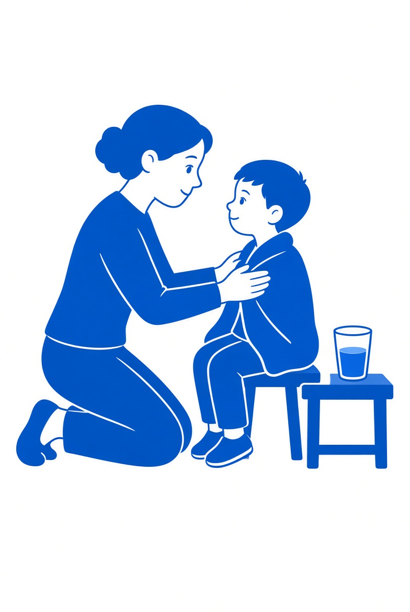
zorgen
to take care (of)
regelmatigrang 223Abstract & generalgetekend
- Scene
- one adult kneels beside a small child seated on a low stool, wrapping a blanket around the child's shoulders with both hands; a glass of water stands on a low table nearby. The adult leans in and looks at the child, and the child looks back.
- Must read
- two people, one wrapping a blanket around the other.
- Avoid
- a child alone bent over a book (leren); one adult at a workbench (maken); two people passing the glass between them (geven); a person holding their head in their hands.
- Alt text
- Een volwassene knielt bij een kind op een krukje en slaat met beide handen een deken om de schouders.
- Example
- Ik zorg voor mijn oma.
I take care of my grandmother.
zorgen.png · rang 223 · A2 regelmatig · lexicon woorden.tsv

voeren
to feed (animals)
regelmatigrang 777Movement & positiongetekend
- Scene
- one adult stands at the edge of a pond and throws small pieces of bread from one hand towards three ducks on the water, the arm just swung forward and the crumbs in the air; the ducks swim towards the bread with their bills open.
- Must read
- bread thrown from a hand towards ducks on the water.
- Avoid
- a ball thrown for a dog (gooien); a person eating a sandwich on a bench (eten); a dog on a lead (uitlaten); a person walking at the front of a group (leiden).
- Alt text
- Iemand aan de rand van een vijver gooit stukjes brood naar drie eenden.
- Example
- Ik voer elke dag de kat.
I feed the cat every day.
voeren.png · rang 777 · A2 regelmatig · lexicon woorden.tsv
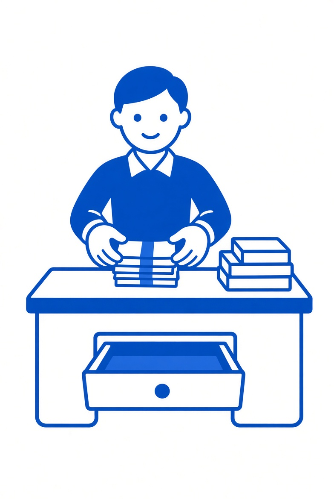
verdienen
to earn
regelmatigrang 805Abstract & generalgetekend
- Scene
- one adult stands behind a shop counter with both hands spread round a small pile of folded banknotes in front of them, at the instant a wooden till drawer is pushed open by the hip; a stack of three flat parcels lies beside the notes, and no other adult is present.
- Must read
- both hands around a pile of notes above an open till drawer.
- Avoid
- a note pushed across the counter into a palm (betalen); a price sign and a straw basket under the counter (kopen); one banknote on a flat open palm (bieden); a pay slip with digits on it.
- Alt text
- Iemand achter de toonbank houdt met twee handen een stapel briefjes vast.
- Example
- Zij verdient goed in haar nieuwe baan.
She earns well in her new job.
verdienen.png · rang 805 · A2 regelmatig · lexicon woorden.tsv

redden
to save (rescue)
regelmatigrang 879Abstract & generalgetekend
- Scene
- one adult kneels at the edge of a swimming pool and reaches down with one arm to grip the wrist of a child in the water; the child's hand is held above the surface and both their faces turn towards each other, with a second hand holding the pool edge.
- Must read
- an adult holding a child's wrist above the water at the pool edge.
- Avoid
- a note held out in one hand while the other lifts a bag (betalen); two adults breaking a loaf between them (delen); a blanket wrapped round a seated child (zorgen); a lifebuoy thrown through the air (gooien).
- Alt text
- Iemand aan de rand van een zwembad houdt een kind in het water bij de pols vast.
- Example
- De brandweer redt de kat.
The fire brigade rescues the cat.
redden.png · rang 879 · A2 regelmatig · lexicon woorden.tsv
geen beeld
melden
to report
regelmatigrang 1007Communication & language
- Scene
- one adult stands at a plain counter with both hands flat on top of it, leaning towards a uniformed officer who sits behind it with a notepad and a pen held ready; a small bag stands at the adult's feet.
- Must read
- an adult at a counter leaning towards an officer who holds a pen over a notepad.
- Avoid
- two people at a table talking with a mouth open each (praten); an adult handing a parcel over a counter (geven); a person on a phone call (bellen); an adult writing a letter alone (schrijven); a speech bubble.
- Alt text
- Een volwassene leunt bij een balie naar een agent die met pen en schrijfblok klaarzit.
- Example
- Ik wil een diefstal melden bij de politie.
I want to report a theft to the police.
melden.png · rang 1007 · A2 regelmatig · lexicon woorden.tsv
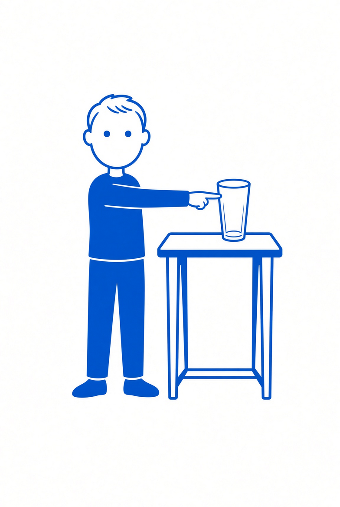
raken
to touch, to hit
regelmatigrang 1011Movement & positiongetekend
- Scene
- one adult stands beside a plain table with one arm stretched out and only the tip of the index finger meeting the side of a standing glass; the glass is upright and steady and still stands clear of the table edge, the arm not yet bent.
- Must read
- a straight index finger just touching the side of an upright glass.
- Avoid
- a flat palm resting on a table edge (leggen); an open hand closing on a glass to lift it (pakken); a fist striking a nail (slaan); the glass tipped over on its side; a spark or a flash at the fingertip.
- Alt text
- Iemand tikt met de top van de wijsvinger tegen de zijkant van een rechtopstaand glas.
- Example
- De bal raakt de muur.
The ball hits the wall.
raken.png · rang 1011 · A2 regelmatig · lexicon woorden.tsv
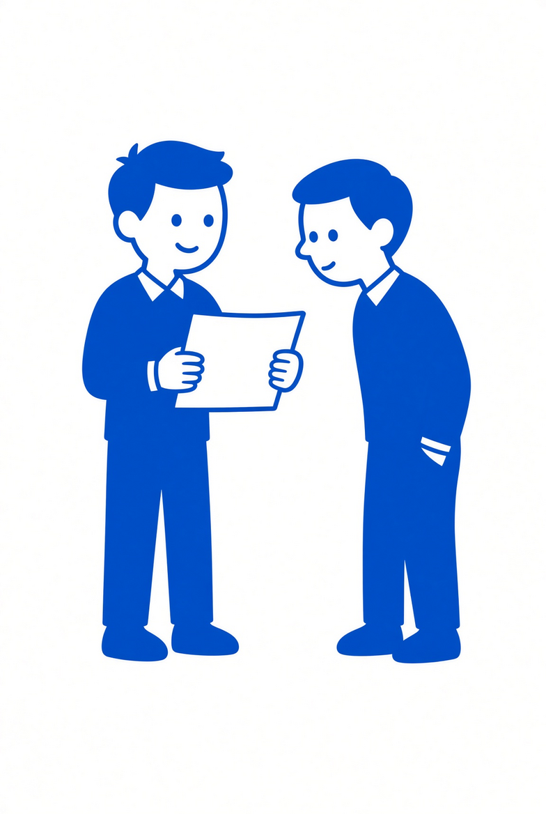
tonen
to show
regelmatigrang 1014Communication & languagegetekend
- Scene
- one adult stands facing a second adult and holds up an unfolded sheet of paper at chest height with both hands, turned so the sheet faces the other person; that person leans in with both eyes on the sheet. The sheet is a plain white oblong with no letters on it.
- Must read
- an unfolded blank sheet held up at chest height, turned to face a second person.
- Avoid
- a box passing from hand to hand between two people (geven); two people with a bar each above the head (praten); one adult leaning close to a framed picture on a wall (bekijken); a person pointing with a straight finger (wijzen); text on the sheet.
- Alt text
- Iemand houdt met twee handen een vel papier omhoog naar een ander, die voorover kijkt.
- Example
- Kunt u uw paspoort tonen?
Can you show your passport?
tonen.png · rang 1014 · A2 regelmatig · lexicon woorden.tsv
geen beeld
organiseren
to organize
regelmatigrang 1070Abstract & general
- Scene
- One adult stands at the front of a hall holding a clipboard with blank paper and pointing with the other hand to rows where two helpers carry chairs into place.
- Must read
- One adult with a clipboard pointing helpers who carry chairs into rows.
- Avoid
- a person at a desk with a calendar (plannen); a person laying plates on a table (dekken); a person leading a group (leiden); a person carrying one chair alone (helpen).
- Alt text
- Iemand met een schrijfbord wijst twee anderen aan waar ze stoelen in rijen moeten zetten.
- Example
- Wij organiseren een feestje voor onze buurt.
We are organising a party for our neighbourhood.
organiseren.png · rang 1070 · A2 regelmatig · lexicon woorden.tsv
geen beeld
wensen
to wish
regelmatigrang 1078Emotion & feeling
- Scene
- one child stands at a table before a round cake with three small flames, eyes shut, hands clasped under the chin and mouth closed.
- Must read
- closed eyes and clasped hands before a cake with small flames.
- Avoid
- a child blowing out the flames (uitblazen); a hand cutting the cake (snijden); a hand lighting a flame with a match (aansteken); two children opening a gift (uitpakken).
- Alt text
- Een kind met gesloten ogen en gevouwen handen staat voor een taart met kaarsjes.
- Example
- We wensen je een fijne verjaardag.
We wish you a happy birthday.
wensen.png · rang 1078 · A2 regelmatig · lexicon woorden.tsv
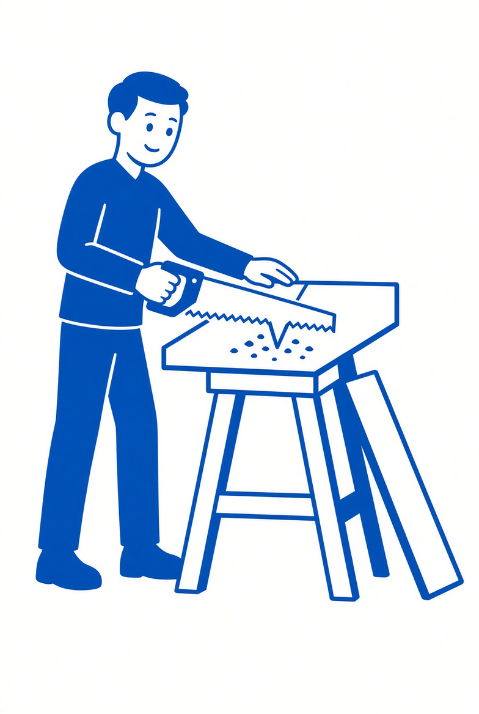
zagen
to saw
regelmatigrang 1079Technology & toolsgetekend
- Scene
- one adult stands beside a low trestle, seen from the side, full figure; a single solid thick bar (the plank) rests flat on top of the trestle; the saw blade runs horizontally from the adult's near hand into a narrow V-shaped notch cut into the plank's top edge, with the blade's toothed lower edge inside the notch, halfway through; the saw never crosses the plank's front face; the free hand rests flat on the plank; a little sawdust lies under the cut. A second plank leans against the trestle.
- Must read
- a toothed saw halfway through the top edge of a clamped plank.
- Avoid
- one adult at a table nailing planks into a crate (maken); a screwdriver turning in a broken chair leg (herstellen); a knife cutting bread on a board (snijden); a tree lying felled on the ground; a machine saw with a guard.
- Alt text
- Iemand beweegt een getand blad door een plank op een schraag; fijn houtstof valt onder de snede op de grond.
- Example
- Mijn vader gaat het hout zagen.
My father is going to saw the wood.
zagen.png · rang 1079 · A2 regelmatig · lexicon woorden.tsv
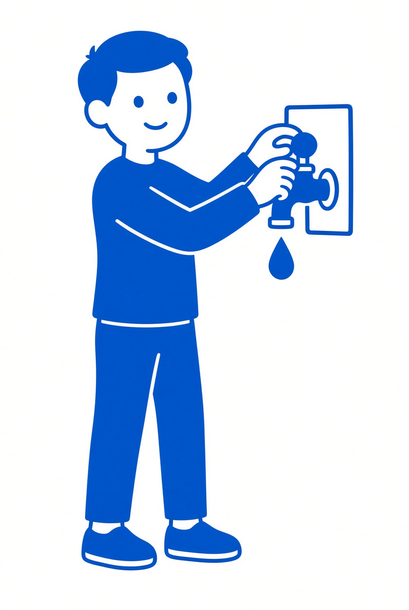
draaien
to turn (round)
regelmatigrang 1089Movement & positiongetekend
- Scene
- one adult stands facing a wall-mounted tap with both hands already closed on the round handle, the wrist just twisted and one drop of water falling from the spout. The body is turned slightly towards the wall, elbows lifted, eyes on the spout. The single water drop is the same solid cobalt as everything else, with no lighter tint; the hand holds the handle directly on the tap, with no pipe or line hanging down from it.
- Must read
- a round tap handle caught mid-turn with one drop leaving the spout.
- Avoid
- a person turning on the spot to face the other way (keren); two people turning in a circle hand in hand (dansen); a door pushed nearly shut (sluiten); a key standing in a lock; a hand on a steering wheel.
- Alt text
- Twee handen houden een ronde kraanhendel vast; er valt een druppel uit de tuit.
- Example
- De wielen van de fiets draaien snel.
The wheels of the bike turn fast.
draaien.png · rang 1089 · A2 regelmatig · lexicon woorden.tsv
geen beeld
ontwikkelen
to develop
regelmatigrang 1100Abstract & general
- Scene
- three identical plant pots stand in a row on a plain shelf; the left pot holds a tiny sprout, the middle pot a taller plant with a few leaves and the right pot a big plant with many leaves; no person.
- Must read
- three pots in a row with the plant growing larger from left to right.
- Avoid
- a can pouring water over one pot (gieten); a person planting a seed with a trowel (planten); a hand pulling a weed (wieden); a balloon being blown up (opblazen).
- Alt text
- Drie potten staan naast elkaar met een steeds grotere plant, van een kiempje tot een hoge struik.
- Example
- Het bedrijf ontwikkelt nieuwe producten.
The company develops new products.
ontwikkelen.png · rang 1100 · A2 regelmatig · lexicon woorden.tsv
geen beeld
plaatsen
to place
regelmatigrang 1100Places & geography
- Scene
- one adult stands at a plain wall shelf and lowers a vase onto it with both hands, the hands still holding the base of the vase.
- Must read
- both hands lowering a vase onto a shelf.
- Avoid
- a flat object laid on a table (leggen); a vase lifted off a shelf (pakken); a picture hung on a wall (hangen); a vase set down on the floor (zetten); a vase held out to another person (geven).
- Alt text
- Iemand zet met twee handen een vaas op een plank aan de muur.
- Example
- Ik plaats de vaas op de plank.
I place the vase on the shelf.
plaatsen.png · rang 1100 · A2 regelmatig · lexicon woorden.tsv
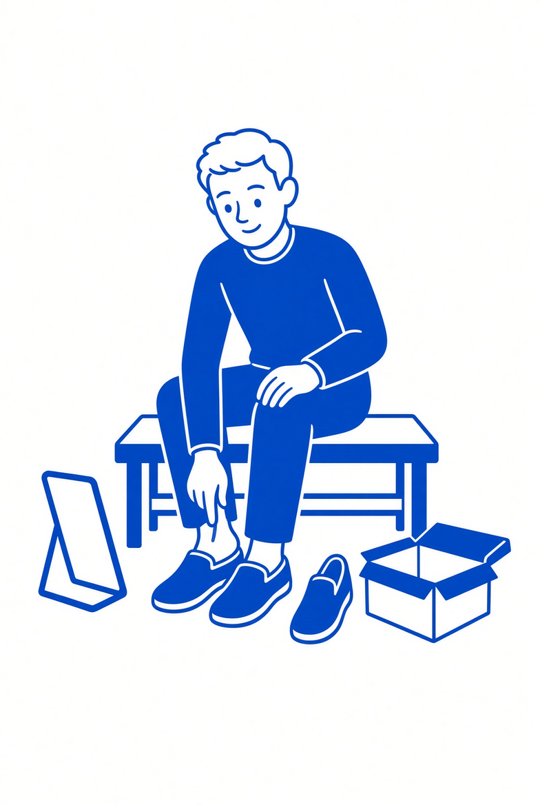
passen
to try on / to fit
regelmatigrang 1102Clothing & appearancegetekend
- Scene
- one adult sits on a low bench in a shoe shop and pulls a new shoe onto one foot, one finger at the heel; the other shoe stands beside its open box on the floor and a small mirror stands at ankle height. No price tag and no shop assistant. The shoe is a laceless slip-on: one hand holds it at the heel tab with a finger inside the heel, the other hand rests on the knee; no laces, loops or knots anywhere.
- Must read
- a shoe being pulled onto a foot beside its open box.
- Avoid
- a lace tied in a bow (strikken); coins handed over a counter (betalen); a pair of shoes carried in a bag (kopen); a person walking in the shoes (lopen).
- Alt text
- Iemand zit op een bankje in een schoenenwinkel en trekt een nieuwe schoen aan, naast de open doos.
- Example
- Deze broek past me niet.
These trousers do not fit me.
passen.png · rang 1102 · A2 regelmatig · lexicon woorden.tsv
geen beeld
verschillen
to differ
regelmatigrang 1136Abstract & general
- Scene
- two plain objects stand side by side on a table, a tall narrow vase and a low wide bowl; an adult stands behind them with one hand held palm down over each.
- Must read
- a tall narrow vase and a low wide bowl side by side.
- Avoid
- two identical cups side by side (lijken); a hand choosing one of two jars (kiezen); one object swapped for another (ruilen); a scale weighing both (wegen).
- Alt text
- Een hoge smalle vaas en een lage brede schaal staan naast elkaar, met een hand boven elk.
- Example
- Mijn zus en ik verschillen heel erg van elkaar.
My sister and I differ a lot.
verschillen.png · rang 1136 · A2 regelmatig · lexicon woorden.tsv
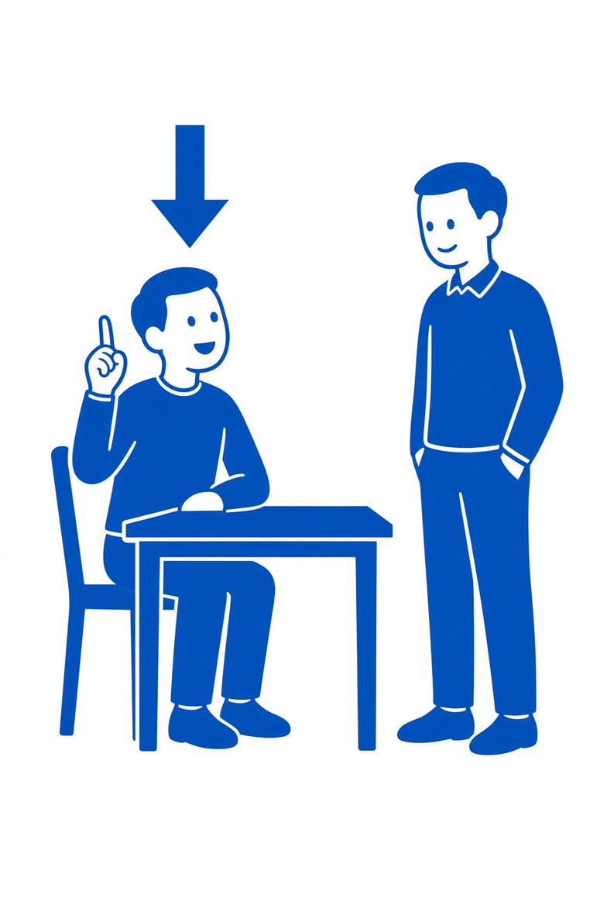
antwoorden
to answer
regelmatigrang 1203Communication & languagegetekend
- Scene
- one adult sits at a plain table looking up at a second adult standing beside it; the seated adult has one hand lifted with the index finger raised and the mouth open in a single word, and no object lies between them. Above the head of the seated adult who is answering floats one bold solid cobalt arrow pointing straight down at the head, with a clear white gap between arrow tip and hair; it marks who performs the verb. The other person has no arrow. No text.
- Must read
- one adult with a raised index finger looking up at another who stands and waits.
- Avoid
- two people with a bar each above the head and one holding a sheet (spreken); a hand cupped behind an ear in a bare room (luisteren); an envelope pushed into a postbox slot (sturen); a telephone held to the ear; letters in the air.
- Contrast
- Pair with vragen. Same two adults: the raised finger answers here, the empty palm is held out low there.
- Alt text
- Iemand kijkt op naar een staande bezoeker en houdt een opgestoken wijsvinger bij een open mond.
- Example
- Hij antwoordt niet op mijn vraag.
He does not answer my question.
antwoorden.png · rang 1203 · A2 regelmatig · lexicon woorden.tsv
geen beeld
grenzen
to border
regelmatigrang 1209Places & geography
- Scene
- two adults stand on either side of one long low fence that runs across the picture, each facing the other with one hand resting on the top rail; behind each of them a small house stands on its own plot, the same size on both sides.
- Must read
- a long fence between two plots with a person on each side, a hand on the top rail.
- Avoid
- two people shaking hands over a fence (begroeten); a person climbing over a fence (klimmen); a person painting a fence (schilderen); a wall with a door in it; a map with a line on it.
- Alt text
- Twee mensen staan aan weerszijden van een lang hek met een hand op de bovenste lat.
- Example
- Nederland grenst aan Duitsland.
The Netherlands borders Germany.
grenzen.png · rang 1209 · A2 regelmatig · lexicon woorden.tsv
geen beeld
herinneren
to remind
regelmatigrang 1212Thought & knowledge
- Scene
- one adult sits in an armchair with a hand under the chin and eyes closed; above the head is one thought cloud drawn as a convention, showing a small child on a bicycle.
- Must read
- a thought cloud above a seated adult, showing a small child on a bicycle.
- Avoid
- a person asleep with a cloud above (dromen); a hand pressed to the forehead with a puzzled face (vergeten); a person looking at a framed photo (kijken); a person with a lightbulb above the head (snappen).
- Alt text
- Een man zit met een hand onder de kin en gesloten ogen; in een wolkje boven zijn hoofd fietst een kind.
- Example
- Ik herinner me mijn eerste fiets nog goed.
I still remember my first bike well.
herinneren.png · rang 1212 · A2 regelmatig · lexicon woorden.tsv
geen beeld
herinneren (aan)
to remind (someone of)
regelmatigrang 1212Thought & knowledge
- Scene
- one adult taps the arm of a second adult with one hand and points the other arm toward a bag standing beside a front door; the second adult looks toward the bag.
- Must read
- a tap on the arm of someone and a straight arm toward a bag by the door.
- Avoid
- one adult telling a story with mouth open (vertellen); an adult pointing at a distant tree (wijzen); an adult handing a bag over (geven); an adult shouting with hands round the mouth (roepen).
- Alt text
- Iemand tikt een ander op de arm en strekt de andere arm naar een tas bij de voordeur.
- Example
- Mijn zus herinnert me aan de afspraak.
My sister reminds me of the appointment.
herinneren-aan.png · rang 1212 · A2 regelmatig · lexicon woorden.tsv
geen beeld
duren
to last
regelmatigrang 1254Time
- Scene
- one adult sits slumped on a plain sofa with the chin on one hand and half-closed eyes, a large hourglass standing on a low table beside the sofa with almost all its sand already in the lower half.
- Must read
- a tall hourglass with almost all its sand run to the bottom, next to a bored seated adult.
- Avoid
- a person looking at a wrist watch (kijken); a person running with a stopwatch (rennen); a person asleep in bed (slapen); an adult waiting at a bus stop (wachten); a clock with numbers.
- Alt text
- Een volwassene hangt verveeld op een bank naast een zandloper waarvan het zand bijna beneden ligt.
- Example
- De film duurt twee uur.
The film lasts two hours.
duren.png · rang 1254 · A2 regelmatig · lexicon woorden.tsv
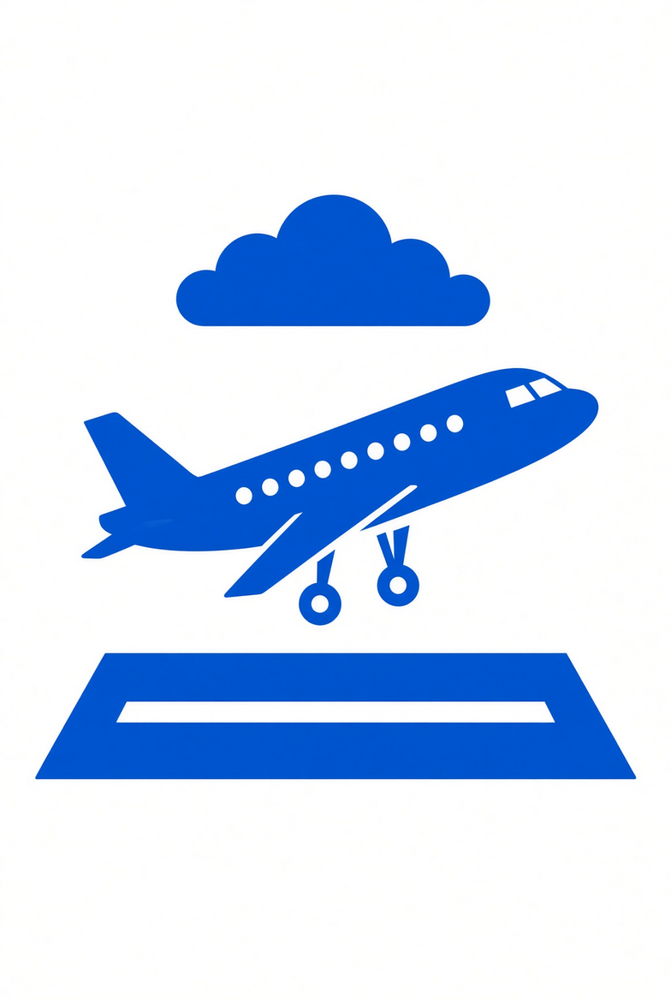
landen
to land
regelmatigrang 1300Transport & travelgetekend
- Scene
- an aeroplane in side view comes down over a runway, its wheels a finger's width above the surface and the nose slightly up, with no smoke at the tyres; one plain stripe runs along the runway and the sky shows only one flat cloud.
- Must read
- an aeroplane with its wheels a finger's width above the runway.
- Avoid
- a pilot at the controls high between clouds (vliegen); a closed cabin door with a grip on the handle (openen); a flat suitcase dropping through the air (vallen); a person walking down the cabin stairs (lopen).
- Contrast
- Pair with vliegen. Same aeroplane and the same sky: the wheels hang a finger's width above the runway here, clouds sit far below the wings there.
- Alt text
- Een vliegtuig daalt boven een startbaan; de wielen hangen net boven het asfalt.
- Example
- Het vliegtuig landt om tien uur.
The plane lands at ten o'clock.
landen.png · rang 1300 · A2 regelmatig · lexicon woorden.tsv
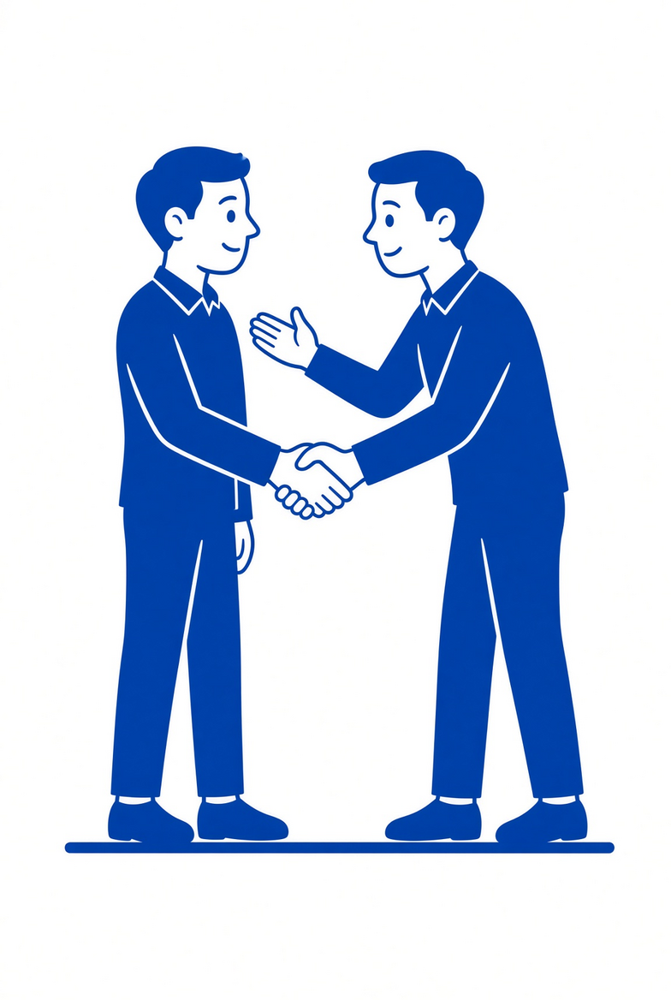
ontmoeten
to meet
regelmatigrang 1319People & relationsgetekend
- Scene
- two adults meet on plain ground with their right hands already in a firm shake and the eyes on each other; the one on the right leans in and has one hand lifted towards the other's shoulder. No object lies between them and they stand a step apart.
- Must read
- two adults shaking hands and looking each other in the eye.
- Avoid
- an open hand raised in a greeting at a doorway (kennen); one adult walking behind another (volgen); a sheet of paper held up between two people (tonen); arms around each other; a table with two chairs.
- Alt text
- Twee volwassenen geven elkaar een stevige hand en kijken elkaar aan.
- Example
- Wij ontmoeten onze buren in de tuin.
We meet our neighbours in the garden.
ontmoeten.png · rang 1319 · A2 regelmatig · lexicon woorden.tsv
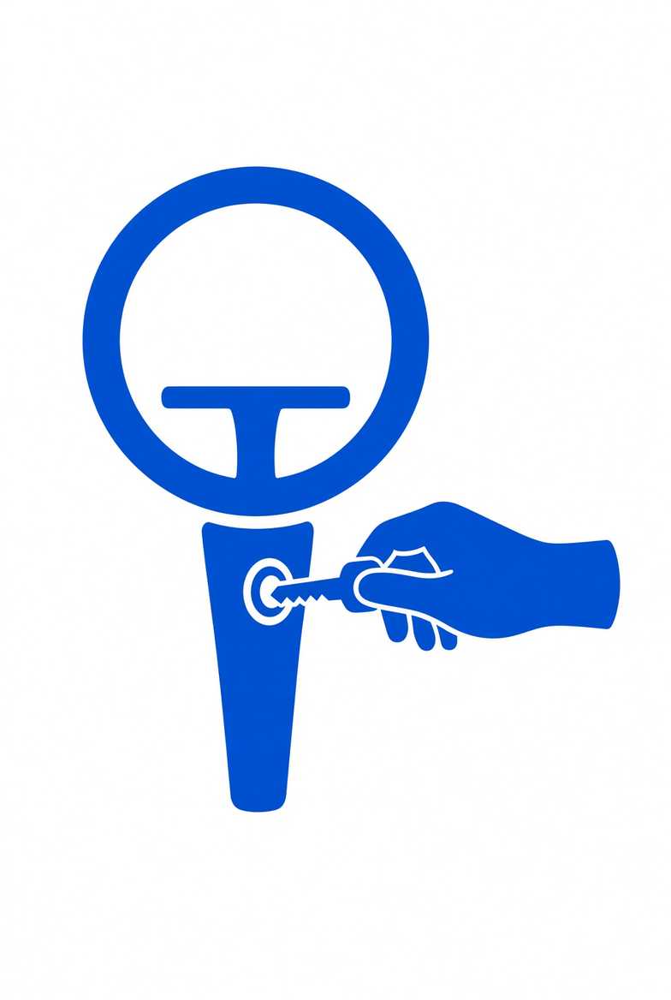
starten
to start (a race)
regelmatigrang 1328Timegetekendopnieuw tekenen
- Scene
- One adult is crouched in a sprint start on two blocks at the beginning of an empty running track, fingertips on the line, the head down, the hips raised, one knee bent forward. The track runs straight ahead into the distance. No other runners, no crowd, no text.
- Must read
- a crouched runner with hands on the line and hips raised.
- Avoid
- a runner at full speed with both feet off the ground (rennen); a person turning a key in a car (opstarten); a person walking on the track (lopen); a finish tape being broken (winnen); a person pressing a button on a computer (opstarten).
- Alt text
- Een volwassene zit gehurkt op twee blokken aan het begin van een lege baan, vingertoppen op de lijn, hoofd omlaag.
- Example
- De hardlopers starten over een minuut.
The runners start in one minute.
starten.png · rang 1328 · A2 regelmatig · lexicon woorden.tsv
geen beeld
creëren
to create
regelmatigrang 1363Abstract & general
- Scene
- one adult stands at a plain table pressing both hands into a lump of clay that has already become half of a small animal figure; the head of the animal is finished and the back half is still a rough lump.
- Must read
- both hands shaping a lump into a half finished animal figure.
- Avoid
- a pencil drawing on a sheet (tekenen); a brush at an easel (schilderen); a person kneading dough with both fists (kneden); a hammer on a stone block (slaan).
- Alt text
- Iemand staat aan een tafel en vormt met beide handen een brok klei tot een half dierfiguur.
- Example
- De kunstenaar creëert een mooi beeld.
The artist creates a beautiful statue.
creeren.png · rang 1363 · A2 regelmatig · lexicon woorden.tsv
geen beeld
regelen
to arrange
regelmatigrang 1445Abstract & general
- Scene
- one adult stands beside a plain table with a phone held to one ear; the free hand pushes the last of three chairs into a neat row beside the table, the face calm and busy.
- Must read
- a phone held to the ear while the other hand sets a chair into a neat row.
- Avoid
- a person laying plates on a table (dekken); a person tidying a shelf (opruimen); a person sitting on a chair (zitten); a person speaking into a phone alone (bellen); a list with marks on it.
- Alt text
- Iemand houdt een telefoon tegen het oor en schuift met de andere hand een stoel recht naast twee andere.
- Example
- Ik regel het vervoer voor het feest.
I am arranging the transport for the party.
regelen.png · rang 1445 · A2 regelmatig · lexicon woorden.tsv
geen beeld
behandelen
to treat (a patient)
regelmatigrang 1474Abstract & general
- Scene
- a doctor sits on a stool beside a seated patient and winds a bandage around the patient's bare lower arm, the patient watching calmly.
- Must read
- a doctor winding a bandage around a patient's forearm.
- Avoid
- a doctor listening to a chest with a stethoscope (onderzoeken); a person helping someone stand up (helpen); a doctor measuring an arm with a cuff (meten); a patient lying asleep in bed (slapen).
- Alt text
- Een dokter windt een verband om de onderarm van een zittende patient.
- Example
- De dokter behandelt de patient met een zalf.
The doctor treats the patient with an ointment.
behandelen.png · rang 1474 · A2 regelmatig · lexicon woorden.tsv
geen beeld
behandelen (onderwerp)
to deal with (a topic), to cover
regelmatigrang 1474Abstract & general
- Scene
- one teacher stands beside a board with a large drawing of a tree and touches it with a pointer; three pupils sit at desks with open books and look at the board.
- Must read
- a teacher at a board drawing, three pupils looking at it.
- Avoid
- a teacher writing on a board (schrijven); a pupil reading aloud from a book (lezen); a teacher drawing a picture (tekenen); a teacher shouting at the class (roepen).
- Alt text
- Een lerares staat bij een bord met een tekening van een boom en tikt erop met een stok; drie leerlingen kijken mee.
- Example
- In de les behandelen we vandaag het weer.
In class we cover the weather today.
behandelen-onderwerp.png · rang 1474 · A2 regelmatig · lexicon woorden.tsv
geen beeld
bevatten
to contain
regelmatigrang 1499Abstract & general
- Scene
- one open cardboard box stands alone on a plain floor with its flaps spread; inside it are packed clearly visible a ball, a mug, a book and a plant pot, all poking a little above the rim.
- Must read
- an open box with several different things packed inside, seen over the rim.
- Avoid
- a person lifting a box off the floor (tillen); a person putting one item into a bag (stoppen); an empty box with its flaps open (leeg); a closed box with a ribbon (geven); a hand taking an item out (pakken).
- Alt text
- Een open doos staat op de grond met een bal, een mok, een boek en een bloempot erin.
- Example
- Dit pakje bevat drie koekjes.
This packet contains three biscuits.
bevatten.png · rang 1499 · A2 regelmatig · lexicon woorden.tsv
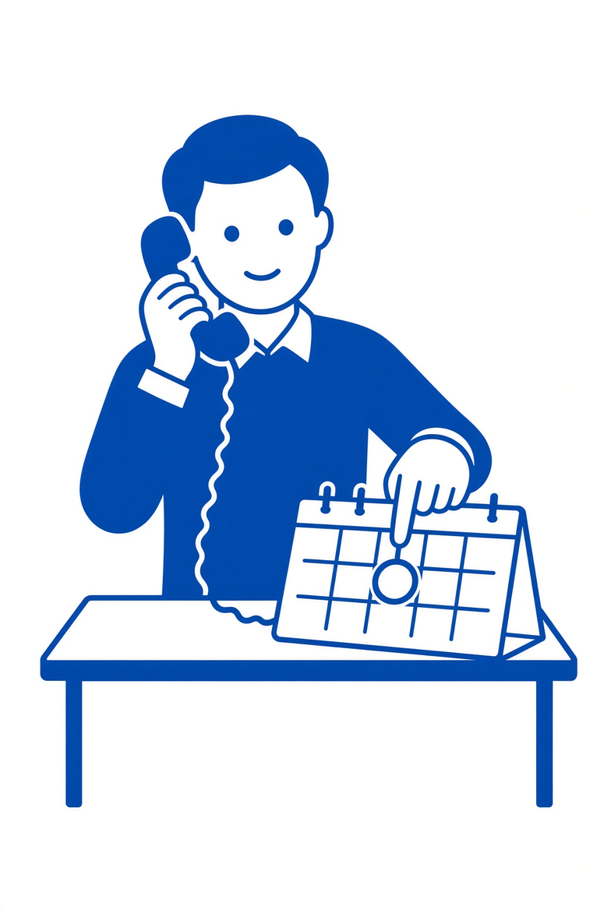
boeken
to book
regelmatigrang 1500Arts & mediagetekend
- Scene
- one adult at a plain desk speaks into a telephone held to one ear while one finger presses a date on an open paper calendar: a square on the calendar is circled in dark ink. No laptop, no second person, and the calendar shows no digits.
- Must read
- a telephone at one ear beside a calendar with one circled day.
- Avoid
- a phone at the ear with no calendar and no second person (bellen); both hands on a suitcase handle at a desk edge (pakken); a note pushed across a counter (betalen); a passport in a raised hand.
- Alt text
- Iemand heeft een telefoon aan het oor en wijst een omcirkelde dag op een kalender aan.
- Example
- Wij boeken een hotel aan zee.
We book a hotel by the sea.
boeken.png · rang 1500 · A2 regelmatig · lexicon woorden.tsv
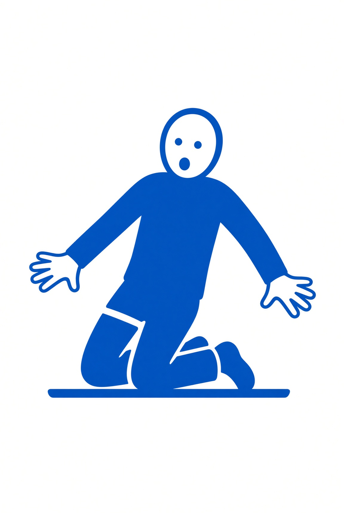
zakken
to drop
regelmatigrang 1519Movement & positiongetekend
- Scene
- one adult is caught sinking to their knees on plain ground: one knee already down, the other leg folding under, both hands open and out to break the fall, the hips low and the mouth open. The body is still above the ground and nothing else is in the picture.
- Must read
- a person halfway down to the floor with both hands out.
- Avoid
- an adult tipping forward with both arms flung out and no hand down (vallen); a hammer raised high over a nail (slaan); a person sitting on a low stool with the back straight (zitten); a person on the floor pushing up with one hand (opstaan); a flat arrow pointing down.
- Alt text
- Iemand gaat met één knie naar de grond, de andere vouwt eronder en beide handen zijn open.
- Example
- De temperatuur zakt vannacht onder nul.
The temperature drops below zero tonight.
zakken.png · rang 1519 · A2 regelmatig · lexicon woorden.tsv
geen beeld
overleven
to survive
regelmatigrang 1540Abstract & general
- Scene
- one adult sits wrapped in a blanket on a small rubber raft with one hand raised toward a rescue boat approaching from the right; a few broken planks float nearby.
- Must read
- a lone figure wrapped in a blanket on a raft with a hand raised toward a boat.
- Avoid
- a person swimming in the water (zwemmen); a person sinking under the surface (verdrinken); a rescuer pulling a person out (redden); a full boat sailing on calm water (varen).
- Alt text
- Iemand zit in een deken op een opblaasbootje en steekt een hand op naar een naderende boot.
- Example
- Zij overleven de storm op zee.
They survive the storm at sea.
overleven.png · rang 1540 · A2 regelmatig · lexicon woorden.tsv
geen beeld
ontdekken
to discover
regelmatigrang 1566Thought & knowledge
- Scene
- one child crouches on the ground holding a large magnifier above a small beetle; the child's eyes are wide and the mouth is open, the free hand points at the beetle.
- Must read
- a crouching child with a magnifier held over a small beetle and wide eyes.
- Avoid
- a person looking through binoculars at a bird (observeren); a person searching under a cushion (zoeken); a person picking up a coin (oprapen); a person drawing a map (tekenen).
- Alt text
- Een kind zit gehurkt met een vergrootglas boven een klein beestje en kijkt met grote ogen.
- Example
- Het kind ontdekt een kever in het gras.
The child discovers a beetle in the grass.
ontdekken.png · rang 1566 · A2 regelmatig · lexicon woorden.tsv
geen beeld
getuigen
to testify
regelmatigrang 1584Law & conflict
- Scene
- one man sits in a small enclosed box beside the raised desk of a judge, mouth open as he speaks; the judge sits behind the desk with a hammer, and a second man at a table listens.
- Must read
- a man seated in a small box beside a judge's raised desk, mouth open.
- Avoid
- a person raising one hand to take an oath (zweren); two friends talking at a table (praten); a person telling a story to children (vertellen); a person pointing at someone (wijzen).
- Alt text
- Een man zit in een afgeschutte bank naast het hoge bureau van een rechter en praat; een man aan een tafel luistert.
- Example
- De buurman getuigt voor de rechter.
The neighbour testifies before the judge.
getuigen.png · rang 1584 · A2 regelmatig · lexicon woorden.tsv
geen beeld
accepteren
to accept
regelmatigrang 1606Abstract & general
- Scene
- one adult stands holding out both open hands to receive a small wrapped gift that a second adult is just placing on the palms; the first adult smiles widely with the head slightly bowed.
- Must read
- two open hands receiving a wrapped gift while the receiver smiles.
- Avoid
- a hand pushing a gift away (weigeren); a hand giving a gift with a bow (geven); a person tearing wrapping paper (openen); two people shaking hands (groeten); a hand grabbing a gift (pakken).
- Alt text
- Iemand houdt twee open handen op en lacht terwijl een ander er een cadeautje op legt.
- Example
- Ik accepteer je uitnodiging graag.
I gladly accept your invitation.
accepteren.png · rang 1606 · A2 regelmatig · lexicon woorden.tsv
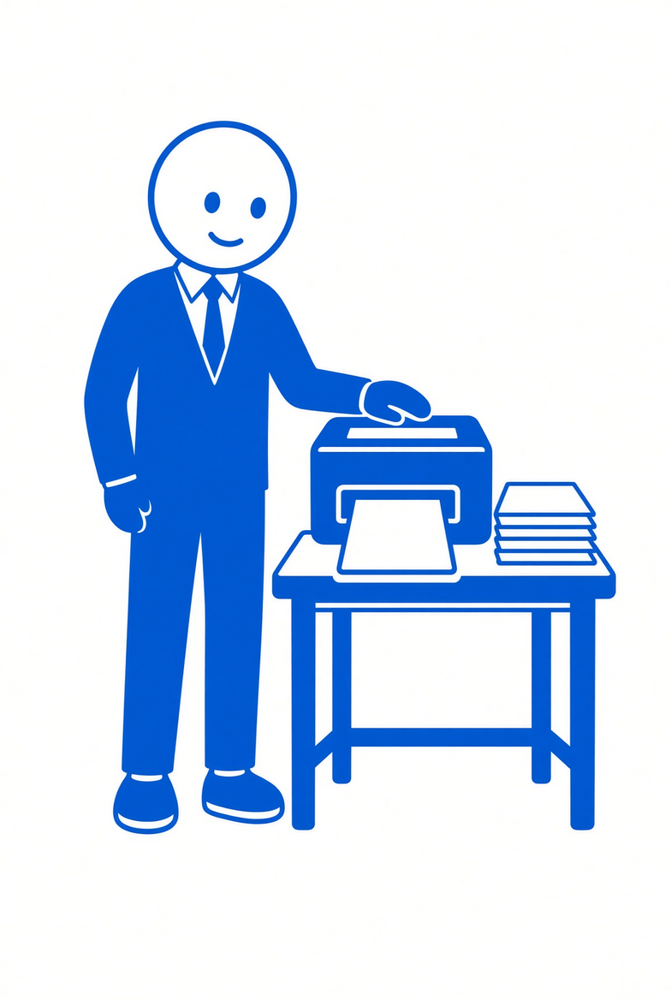
drukken
to print (typeset)
regelmatigrang 1880Abstract & generalgetekend
- Scene
- one adult stands beside a desktop printer on a small table, one hand resting on its lid, watching a single blank white sheet that is half out of the front slot; a small stack of blank paper sits beside it. No screen, no text on the sheets.
- Must read
- a blank sheet coming half out of a desktop printer.
- Avoid
- a finger pressing a doorbell button (duwen); a hand pressing down on a stamp pad (stempelen); a person writing by hand with a pen (schrijven); a book on a shelf; a crate being pushed.
- Alt text
- Iemand staat naast een bureauprinter waaruit een leeg vel papier half naar buiten komt.
- Example
- Deze boeken zijn in Nederland gedrukt.
These books were printed in the Netherlands.
drukken.png · rang 1880 · A2 regelmatig · lexicon woorden.tsv
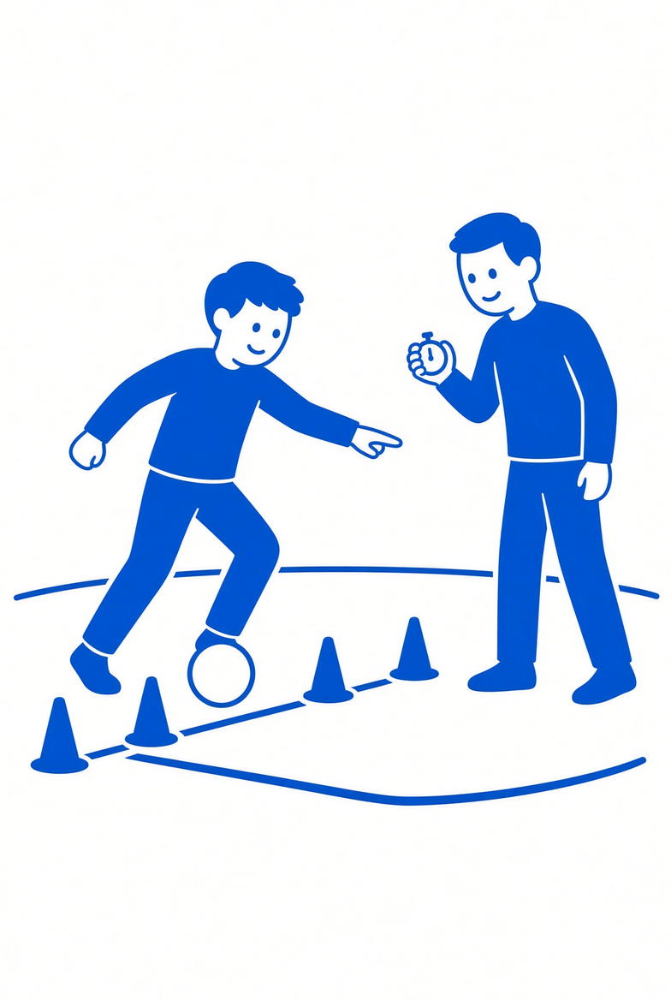
trainen
to train
regelmatigrang 1898Sport & gamesgetekend
- Scene
- two adults on an open sports field: a player dribbles a ball in a slalom between a row of cones, and a coach stands to the side holding a stopwatch in one hand with the other arm pointing along the row. Both look at the cones.
- Must read
- a coach with a stopwatch beside a player dribbling a ball between cones.
- Avoid
- a person doing a push-up on a mat (sporten); a match with two teams (spelen); a person running alone (rennen); a classroom with a board (leren); a person lifting a barbell.
- Alt text
- Een volwassene stuit een bal tussen pionnen door terwijl een ander met een stopwatch in de hand toekijkt.
- Example
- Onze club traint op woensdagavond.
Our club trains on Wednesday evening.
trainen.png · rang 1898 · A2 regelmatig · lexicon woorden.tsv
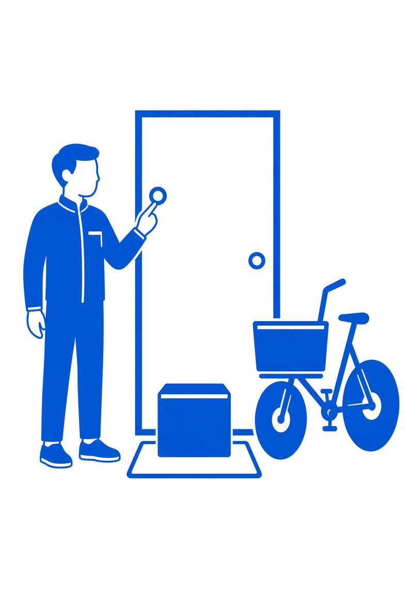
bezorgen
to deliver
regelmatigrang 1904Abstract & generalgetekend
- Scene
- one adult courier in a plain jacket stands at a house front door, sets a medium cardboard parcel down on the doormat with one hand and presses the doorbell button with the other; a cargo bike with a box stands at the kerb. The door is closed and nobody else is in the picture. The parcel rests on the doormat with the courier's hand just lifted off it; the door is a flat outline in the same single cobalt with no lighter side panel or stripe. The parcel rests flat on the doormat with both of the courier's hands empty of it and one hand pressing the bell; the door is a plain outline with no inner frame, panel or light stripe. The courier stands upright beside the door; one hand is raised and its finger presses the round bell button; the other arm hangs empty at the side; the parcel sits alone on a plain doormat drawn as a bare rectangle with no hatching; the door is a bare rectangle outline with no inner frame line. Every line is thick and bold; any bicycle is a simple bold-outline shape with solid wheel discs and no spokes; the parcel sits fully inside the doormat rectangle, clear of the step, with no tape line.
- Must read
- a parcel set down on a doormat in front of a closed door.
- Avoid
- a box passing from hand to hand between two people (geven); a person carrying a box into a new house (verhuizen); a person posting a letter into a box (sturen); a person at a shop counter with a bag (kopen); a ribbon on the parcel.
- Alt text
- Iemand zet een pakket op de deurmat voor een gesloten deur; een bakfiets staat bij de stoeprand.
- Example
- De postbode bezorgt de pakketjes om twee uur.
The postman delivers the parcels at two o'clock.
bezorgen.png · rang 1904 · A2 regelmatig · lexicon woorden.tsv
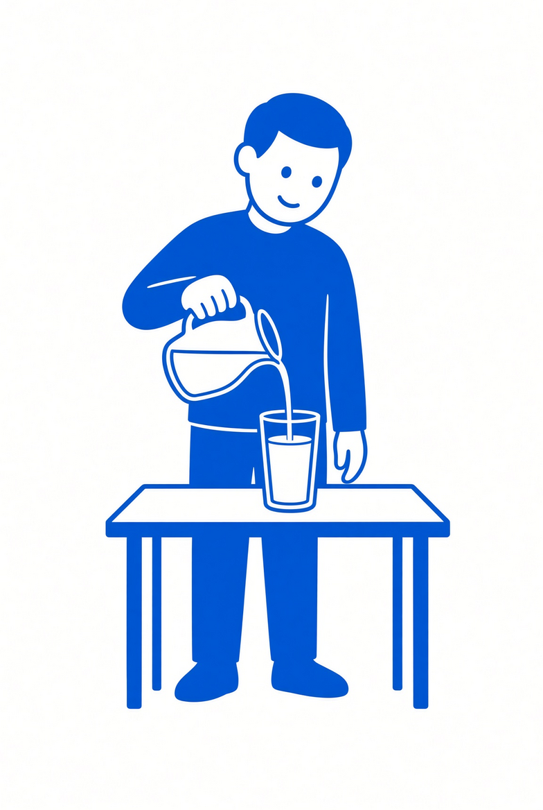
vullen
to fill
regelmatigrang 1923Society & politicsgetekend
- Scene
- one adult stands at a plain table and pours water from a glass jug held in one hand into a tall glass standing on the table; the water in the glass has reached just below the rim and a thin stream still runs from the jug. The adult watches the water level.
- Must read
- a stream from a jug into a glass with the water just below the rim.
- Avoid
- an empty glass tipped over on its side (leegmaken); a kettle pouring into a cup with steam (koken); a hand lifting a full glass to the mouth (drinken); a jug and a glass standing apart; drops flying over the table.
- Alt text
- Iemand giet vanuit een glazen kan water in een hoog glas; het water staat bijna tot de rand.
- Example
- Ik vul de fles met water.
I fill the bottle with water.
vullen.png · rang 1923 · A2 regelmatig · lexicon woorden.tsv
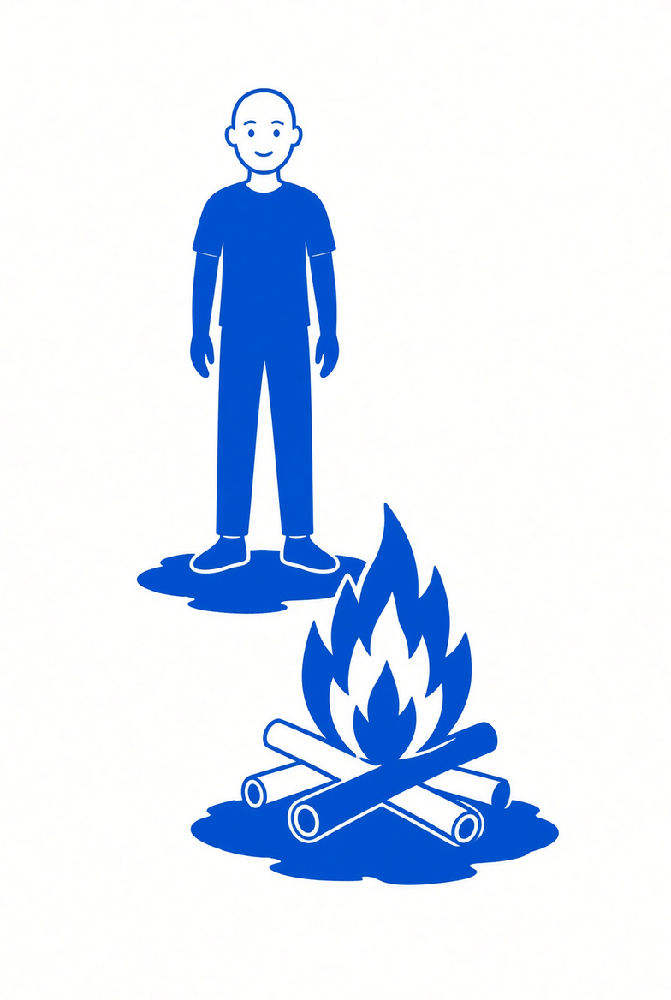
branden
to burn (a fire)
regelmatigrang 2102Body & healthgetekend
- Scene
- one adult stands a metre back from a campfire of three crossed logs on bare ground, the arms at the sides and the face lit; bold flames rise from the logs and one log has gone dark at the ends. No smoke cloud, no tent, no other person.
- Must read
- bold flames rising from crossed logs with a person standing back.
- Avoid
- a pot on a stove with a spoon (koken); a hand pulled back from a hot pan (pijn doen); a candle on a table; a house with flames at the windows; a bucket of water thrown on the logs.
- Alt text
- Een volwassene staat op afstand van een kampvuur; hoge vlammen slaan uit drie gekruiste houtblokken.
- Example
- De open haard brandt de hele avond.
The fireplace burns all evening.
branden.png · rang 2102 · A2 regelmatig · lexicon woorden.tsv
geen beeld
lenen (uit)
to lend
regelmatigrang 2121Money & trade
- Scene
- one adult holds a bicycle by the handlebar and pushes it forward towards a friend who has both hands out for the grip; the owner's arm is stretched and the friend is about to take the handle.
- Must read
- a bicycle pushed by its owner towards a friend's waiting hands.
- Avoid
- a person riding a bicycle away (fietsen); a person locking a bicycle to a rail (vastzetten); a person buying a bicycle at a shop (kopen); a person pumping the tyre (pompen); a hand taking a bike from the owner (lenen).
- Alt text
- Iemand duwt zijn fiets naar een vriend die met uitgestoken handen klaarstaat.
- Example
- Ik leen mijn fiets graag uit aan mijn buurman.
I like to lend my bike to my neighbour.
lenen-uit.png · rang 2121 · A2 regelmatig · lexicon woorden.tsv
geen beeld
bevestigen (vast)
to attach, to fasten
regelmatigrang 2180Abstract & general
- Scene
- one adult stands at a wall and turns a screwdriver to fasten a metal bracket under a wooden shelf; the shelf is held level with the other hand.
- Must read
- a screwdriver fastening a bracket that holds a shelf against a wall.
- Avoid
- a person hammering a nail into a plank (timmeren); a person hanging a picture on a hook (ophangen); a person sticking a strip of tape on a box (plakken); a person putting a book on a shelf (zetten).
- Alt text
- Iemand draait met een schroevendraaier een plank tegen de muur vast terwijl de andere hand haar waterpas houdt.
- Example
- Hij bevestigt de plank aan de muur.
He attaches the shelf to the wall.
bevestigen-vast.png · rang 2180 · A2 regelmatig · lexicon woorden.tsv
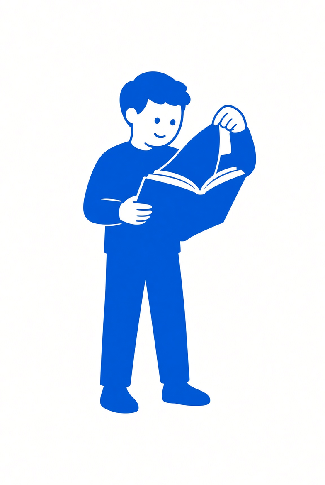
bladeren
to glance through
regelmatigrang 2702Movement & positiongetekend
- Scene
- one adult stands holding an open book with the pages fanned half turned, one hand caught in the very act of turning a leaf, and the eyes fixed on the lower page; the book is held up clear of the body, and there is no chair, no table and nobody else. The free hand grips the top corner of one large white page and swings it over in an arc above the open book, the page clearly attached to the spine; the eyes look down at the book.
- Must read
- a hand turning one page of a book held open in the other.
- Avoid
- a finger running down a column of text (lezen); a thumb pressed to a tablet (typen); a closed book pressed to the chest (houden); a hand smoothing a folder of loose sheets.
- Alt text
- Iemand houdt een boek open en slaat met de vrije hand een bladzijde om.
- Example
- Ik blader even door het tijdschrift.
I am leafing through the magazine for a moment.
bladeren.png · rang 2702 · A2 regelmatig · lexicon woorden.tsv
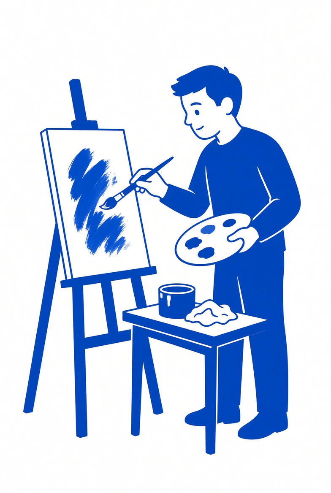
schilderen
to paint
regelmatigrang 2767Arts & mediagetekend
- Scene
- one adult stands at a wooden easel and lays a loaded brush on the canvas, the bristles just touching the wet paint; a paint pot and rags sit on a table at hand, and the other hand holds a palette with three blobs of paint. The canvas shows only broad strokes.
- Must read
- a brush touching wet paint on a canvas on an easel.
- Avoid
- a pencil on a sheet of paper (tekenen); a roller on a long wall; a camera held up to the eye (fotograferen); a pen on a dotted line (ondertekenen); a brush emptying into a pot.
- Contrast
- Pair with tekenen. Same maker at work: a loaded brush lays paint on a canvas here, a pencil point draws a line on paper there.
- Alt text
- Een volwassene staat aan een ezel en zet de kwast op het doek, naast potten verf.
- Example
- Mijn oma schildert graag bloemen op doek.
My grandmother likes painting flowers on canvas.
schilderen.png · rang 2767 · A2 regelmatig · lexicon woorden.tsv
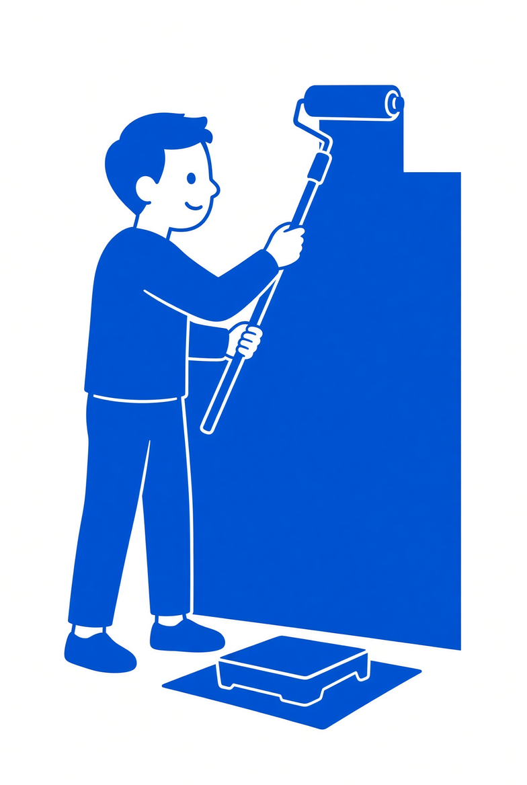
schilderen (muur)
to paint (a wall)
regelmatigrang 2767House & homegetekend
- Scene
- One adult stands on the floor with a long roller on a fixed pole, pushing it up a bare interior wall; a fresh band of paint follows the roller, the wall below already done and the wall above still bare. A paint tray sits on a cloth on the floor. Nothing else in the picture. The wall is a rectangle whose right edge ends well inside the frame with about 8% white margin on the right, with the floor line stopping there too.
- Must read
- a roller laying a band of paint on a bare wall.
- Avoid
- a loaded brush on a canvas on an easel (schilderen); a brush dipped in a bucket of dye (verven); a pencil on a sheet of paper (tekenen); a hand pressing wallpaper against a wall (behangen); a camera held up to the eye (fotograferen).
- Alt text
- Een volwassene duwt een roller aan een lange stok omhoog over een kale muur, onder een natte baan verf.
- Example
- Wij schilderen de muur van de kamer wit.
We paint the wall of the room white.
schilderen-muur.png · rang 2767 · A2 regelmatig · lexicon woorden.tsv
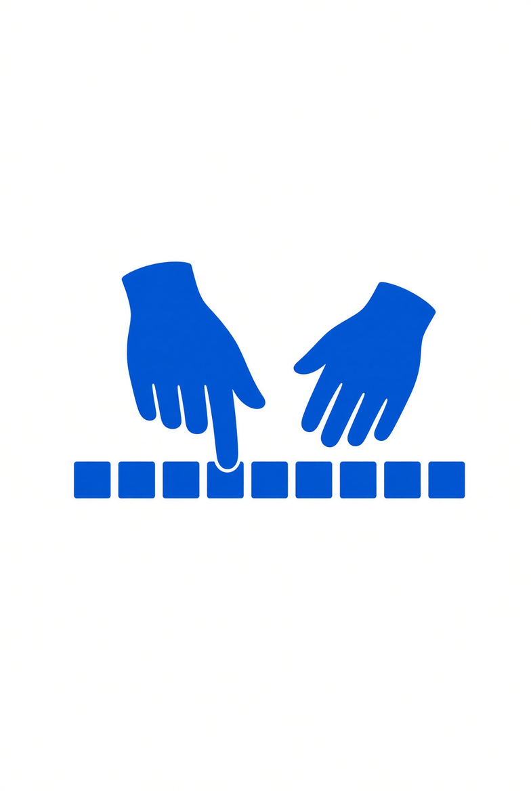
typen
to type
regelmatigrang 2793Abstract & generalgetekend
- Scene
- a keyboard drawn as a short bar of large separate square keys, centred with wide white margin on every side, one hand above it pressing one key down and the other hand resting beside it; nothing else.
- Must read
- fingers pressing keys on a keyboard.
- Avoid
- a pen on paper (schrijven); a whole person at a desk with a laptop (werken); a finger on a phone screen (bellen); a page being turned (lezen).
- Alt text
- Een hand drukt een toets in op een toetsenbord.
- Example
- Ze kan snel typen zonder naar het toetsenbord te kijken.
She can type fast without looking at the keyboard.
typen.png · rang 2793 · A2 regelmatig · lexicon woorden.tsv
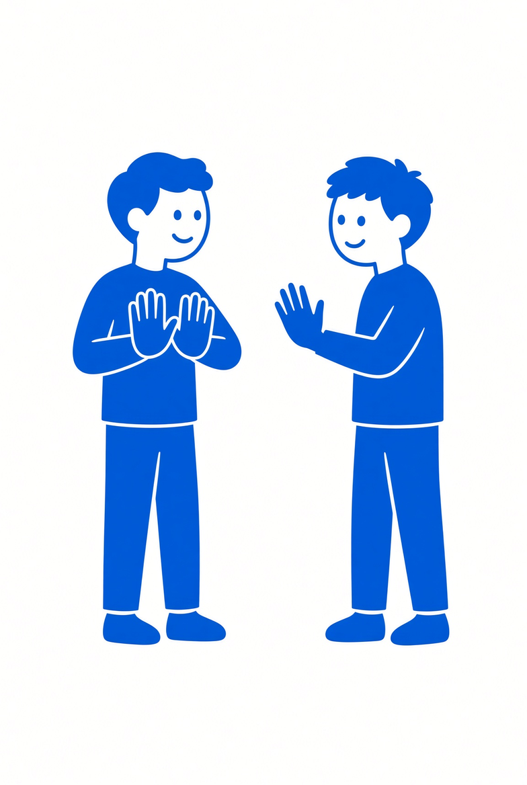
klappen
to clap
regelmatigrang 2827Abstract & generalgetekend
- Scene
- one adult stands facing the viewer and brings both open palms together in front of the chest at the very moment of contact, fingers spread, elbows out; a second adult a metre away watches with a smile. There is no music, no stage and nothing to hold in either hand.
- Must read
- two flat palms meeting in the air in front of the chest.
- Avoid
- one palm tapping a table top; a handshake between two people (afspreken); arms raised in the air with open mouths (juichen); a fist thumped on a door (kloppen).
- Alt text
- Een volwassene slaat de platte handen tegen elkaar vlak voor de borst.
- Example
- Na het concert klapt iedereen luid.
After the concert everyone claps loudly.
klappen.png · rang 2827 · A2 regelmatig · lexicon woorden.tsv
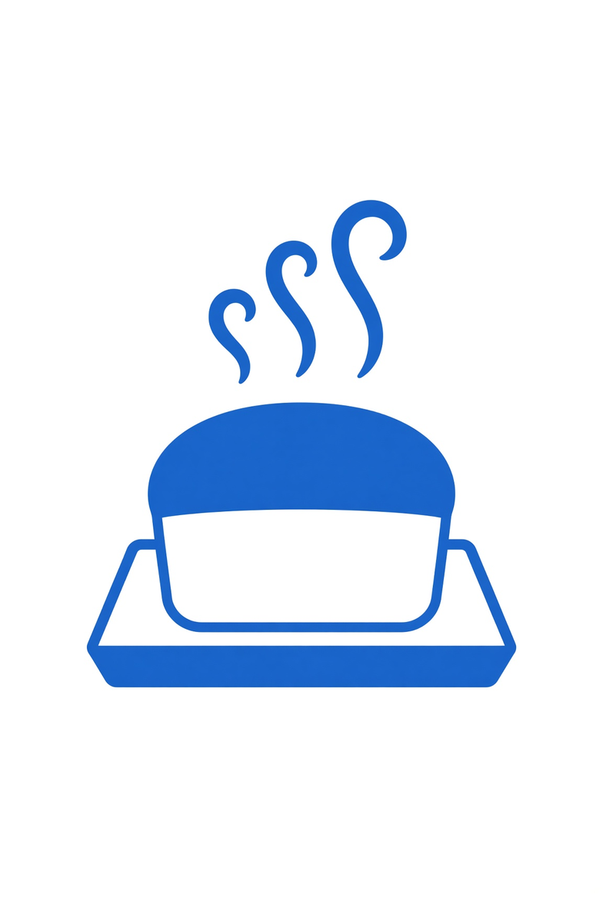
verbranden
to burn
regelmatigrang 2984Body & healthgetekend
- Scene
- no person: a single loaf on a baking tray with the top half of the loaf solid cobalt (burnt) and the bottom half a white shape with an outline, and three smoke curls rising above it; nothing else.
- Must read
- a loaf burnt dark on top with smoke rising.
- Avoid
- a finger held under a cold tap (afkoelen); a candle burning upright on a table; a pot boiling over (koken); a person asleep on a beach; a whole plate of burnt food shown to the viewer.
- Alt text
- Een brood is bovenop zwart gebrand en er stijgt rook op.
- Example
- Ik heb de soep per ongeluk laten verbranden.
I accidentally let the soup burn.
verbranden.png · rang 2984 · A2 regelmatig · lexicon woorden.tsv
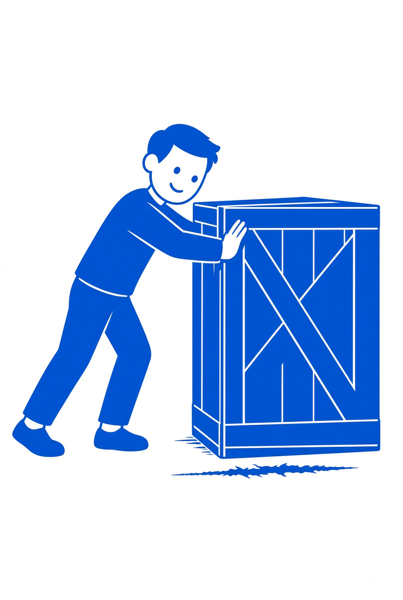
duwen
to push
regelmatigrang 3053Movement & positiongetekend
- Scene
- one adult leans into a large closed wooden crate on a bare floor with both palms flat against its side, the arms straight, the body slanted and the back foot braced; the crate has slid a hand's width, shown by a short scrape on the floor.
- Must read
- a whole body leaning into a crate with both palms flat on it.
- Avoid
- a rope pulled towards the body (trekken); a drawer slid shut with one palm (schuiven); the crate lifted off the floor (tillen); a foot kicking the crate (schoppen).
- Contrast
- Pair with trekken. Same body and the same object line: the body leans in and the object goes away here, the body leans away and the object comes towards it there.
- Alt text
- Iemand zet beide handpalmen tegen een grote kist; het lijf staat schuin en de achterste voet steunt.
- Example
- Help je mij de auto duwen?
Will you help me push the car?
duwen.png · rang 3053 · A2 regelmatig · lexicon woorden.tsv
geen beeld
schudden (hand)
to shake hands
regelmatigrang 3070Movement & position
- Scene
- Two adults stand facing each other an arm's length apart, smiling, their right hands clasped together at the middle between them in a handshake. Both look at each other's face. Plain background, no objects, no text.
- Must read
- two right hands clasped between two smiling people.
- Avoid
- a bottle shaken up and down in one hand (schudden); a hand waving in the air (zwaaien); two people hugging (omhelzen); a box passed between hands (geven); a person bowing (buigen).
- Alt text
- Twee mensen staan tegenover elkaar en pakken elkaars rechterhand vast; ze lachen en kijken elkaar aan.
- Example
- Hij schudt de nieuwe collega de hand.
He shakes the new colleague's hand.
schudden-hand.png · rang 3070 · A2 regelmatig · lexicon woorden.tsv
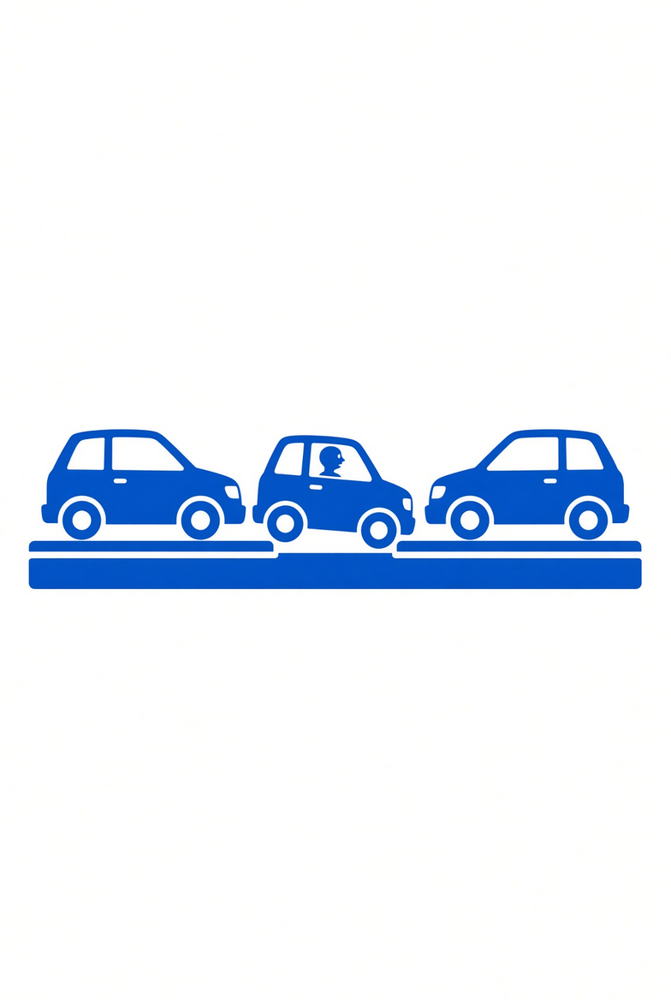
parkeren
to park
regelmatigrang 3162Places & geographygetekend
- Scene
- one adult reverses a small car into a gap between two cars standing at the kerb, seen from above and to the side; the driver's head is turned to look back over the shoulder, and the car is half into the gap. No sign and no lettering.
- Must read
- a car half reversed into a gap between two others at the kerb.
- Avoid
- a car moving along an open road (rijden); a car at a fuel pump (tanken); a car with its bonnet open (repareren); a sign with a letter on it.
- Alt text
- Een auto gaat achteruit een lege plek in tussen twee stilstaande auto's langs de stoep; de bestuurder kijkt achterom.
- Example
- Je kunt hier niet gratis parkeren.
You cannot park here for free.
parkeren.png · rang 3162 · A2 regelmatig · lexicon woorden.tsv
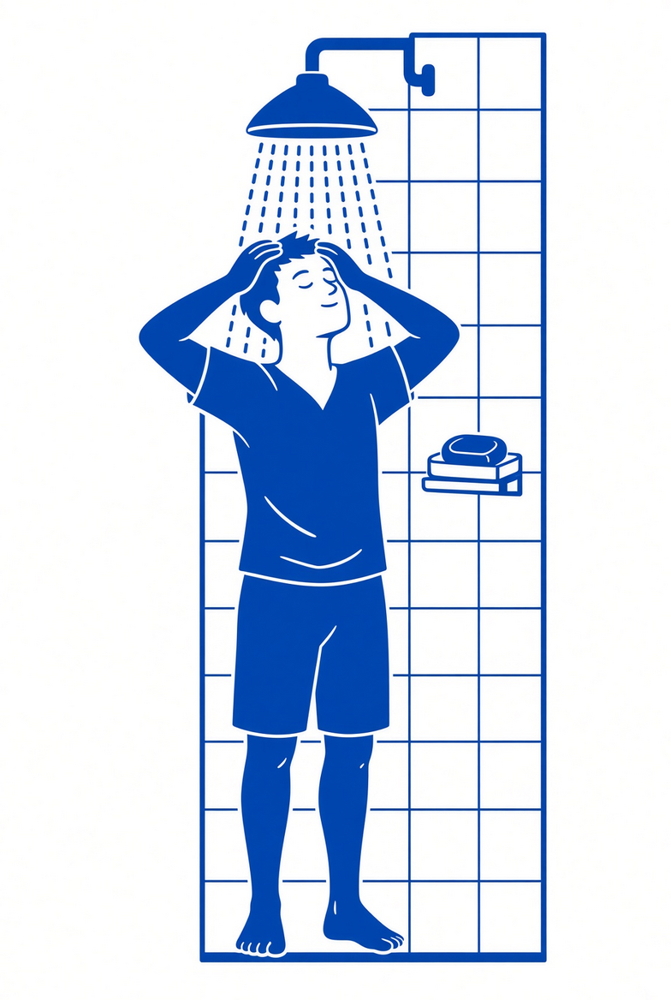
douchen
to shower
regelmatigrang 3190House & homegetekend
- Scene
- one adult stands under a shower head fixed to a tiled wall, eyes closed and chin raised, both hands pushing wet hair back from the forehead; straight lines of water fall from the shower head onto the head and shoulders, and a bar of soap sits on a small wall rack.
- Must read
- water falling from a shower head onto a standing person.
- Avoid
- hands rubbed under a tap at a basin (wassen); a person lying in a bath; a swimmer in a pool with goggles (zwemmen); rain falling from a cloud (regenen).
- Alt text
- Een volwassene staat met gesloten ogen onder een straal water die uit de wand op het hoofd valt.
- Example
- Ik douche elke ochtend met warm water.
I shower with warm water every morning.
douchen.png · rang 3190 · A2 regelmatig · lexicon woorden.tsv
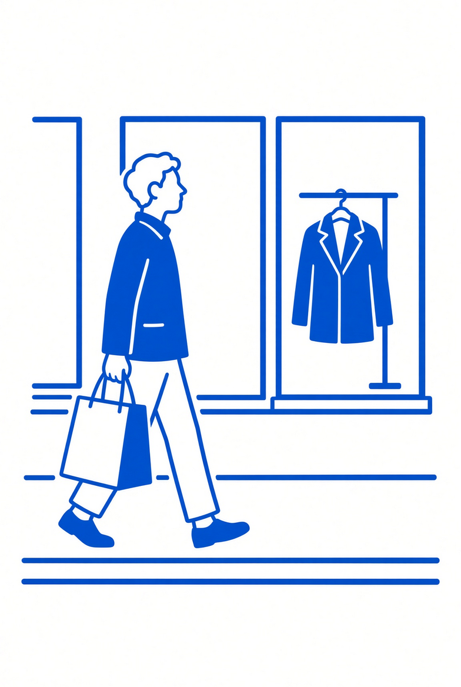
winkelen
to go shopping
regelmatigrang 3220Money & tradegetekend
- Scene
- one adult walks slowly along a row of shop windows, two full shopping bags in one hand, the head turned to look into the next window, where a jacket hangs on a stand; the pavement is otherwise empty.
- Must read
- a person with shopping bags looking into a shop window.
- Avoid
- coins handed over a counter (betalen); a cashier passing a bag across a till (verkopen); one large box carried in both arms (dragen); a trolley in a supermarket aisle.
- Alt text
- Iemand loopt met twee volle tassen langs etalages en kijkt naar een jas achter het glas.
- Example
- Wij gaan zaterdag winkelen in de stad.
We are going shopping in town on Saturday.
winkelen.png · rang 3220 · A2 regelmatig · lexicon woorden.tsv
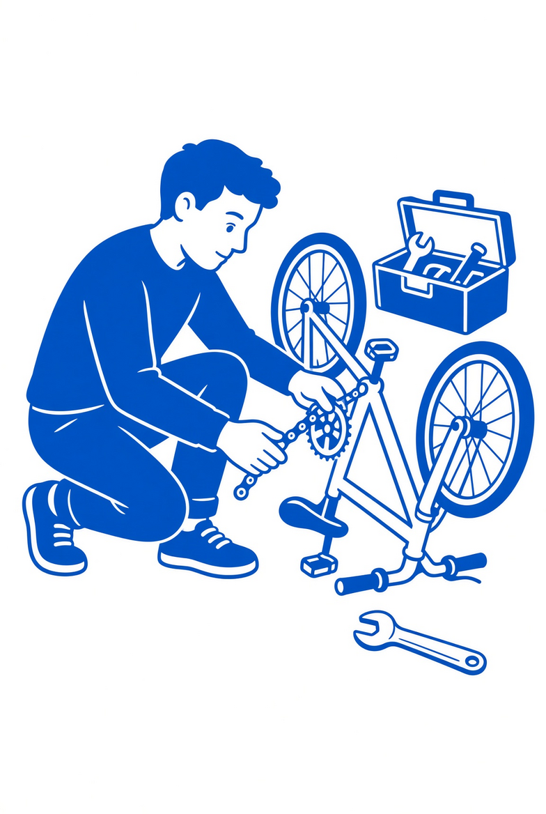
repareren
to repair
regelmatigrang 3350Technology & toolsgetekend
- Scene
- one adult crouches beside an upturned bicycle and fits the loose chain back onto the front cog with both hands; a spanner lies on the ground beside the wheel and a small open toolbox stands behind.
- Must read
- hands fitting a loose chain back onto an upturned bicycle.
- Avoid
- a person riding the bicycle (fietsen); a box nailed together from planks (maken); a bandage wound round an arm (verbinden); an old part swapped for a new one (vervangen).
- Alt text
- Iemand zit gehurkt bij een omgekeerde fiets en legt de losse ketting terug om het tandwiel.
- Example
- Mijn buurman repareert mijn kapotte fiets.
My neighbour is repairing my broken bike.
repareren.png · rang 3350 · A2 regelmatig · lexicon woorden.tsv
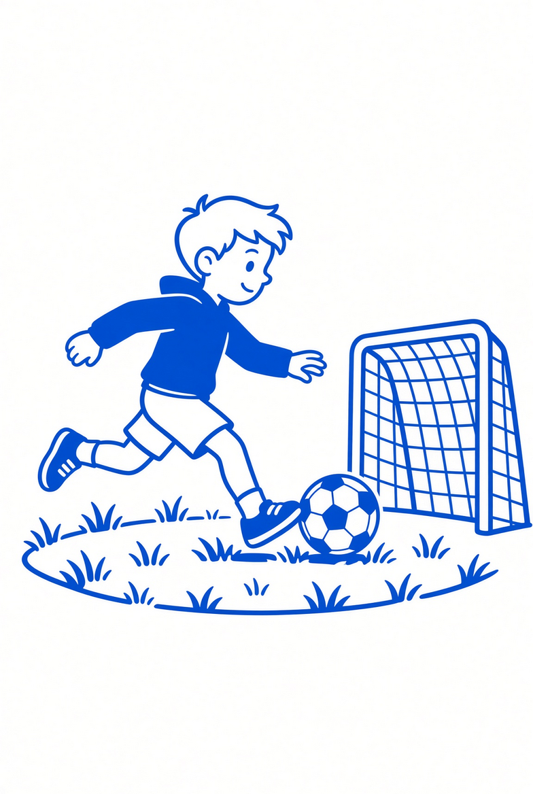
voetballen
to play football
regelmatigrang 3553Sport & gamesgetekend
- Scene
- one child runs at a ball on a grass field and strikes it with the side of the foot, the ball just leaving the shoe towards a small goal with a net at the right edge; the arms are out for balance. The grass is a short patch well inside the frame with clear white space on both sides and the goal fully inside the picture, nothing near the left or right edge; the ball is just leaving the shoe, touching the boot.
- Must read
- a foot striking a ball towards a goal with a net.
- Avoid
- a ball thrown with both hands (gooien); a ball caught against the chest (vangen); a club swung over a small ball (golfen); a ball pushed along the floor by hand (spelen).
- Alt text
- Een kind schiet op een grasveld een bal met de zijkant van de schoen richting een doel met een net.
- Example
- Mijn zoon wil elke middag voetballen.
My son wants to play football every afternoon.
voetballen.png · rang 3553 · A2 regelmatig · lexicon woorden.tsv
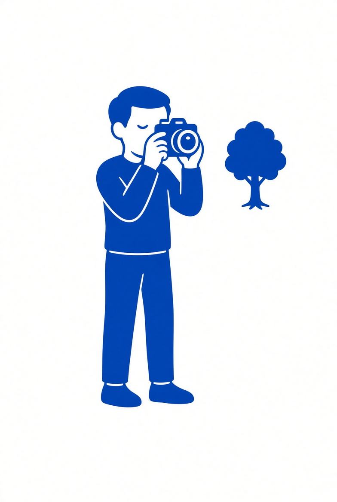
fotograferen
to take a photo
regelmatigrang 3567Arts & mediagetekend
- Scene
- one adult stands with a camera raised to one eye, a finger on the button on top, aimed at a small tree a few metres away; the other eye is closed and the elbows are tucked in. Nothing else in the picture.
- Must read
- a camera held to the eye and aimed at a tree.
- Avoid
- a brush on a canvas at an easel (schilderen); a hand shading the eyes (kijken); a pencil on a sketch pad (tekenen); a phone held to the ear (bellen).
- Alt text
- Iemand houdt een camera voor het oog en richt die op een boompje; het andere oog is dicht.
- Example
- Zij fotografeert graag de bergen.
She likes to photograph the mountains.
fotograferen.png · rang 3567 · A2 regelmatig · lexicon woorden.tsv
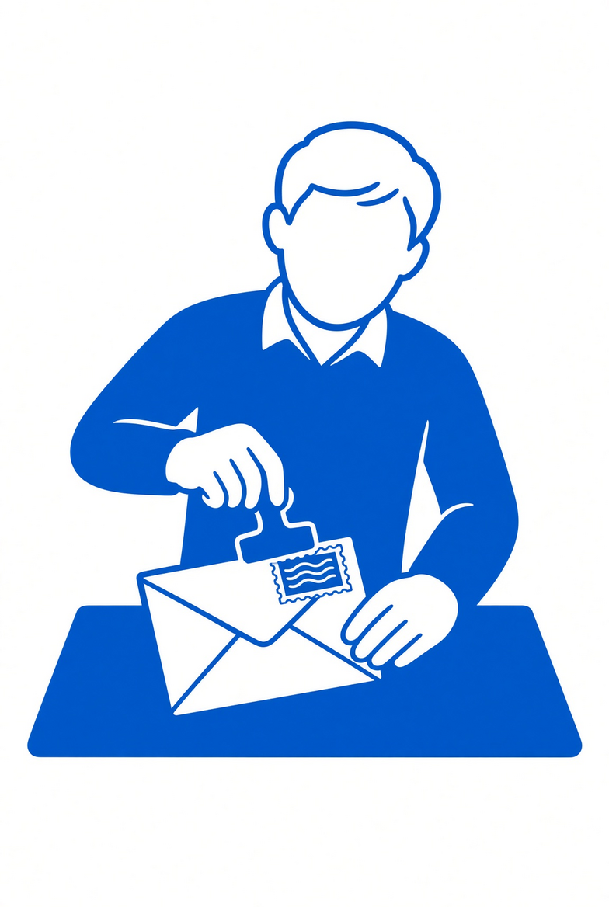
plakken
to stick (on)
regelmatigrang 3685Communication & languagegetekend
- Scene
- one adult presses a postage stamp onto the top corner of an envelope with the thumb, the other hand holding the envelope flat on a table; the stamp is half pressed down and nothing is written on the envelope.
- Must read
- a thumb pressing a stamp onto an envelope.
- Avoid
- an envelope dropped into a postbox (sturen); a key pushed into a lock (steken); a sheet of paper torn in two (scheuren); a pen moving over paper (schrijven).
- Alt text
- Iemand drukt met de duim een postzegel op de hoek van een envelop die plat op tafel ligt.
- Example
- Ik plak een postzegel op de envelop.
I stick a stamp on the envelope.
plakken.png · rang 3685 · A2 regelmatig · lexicon woorden.tsv
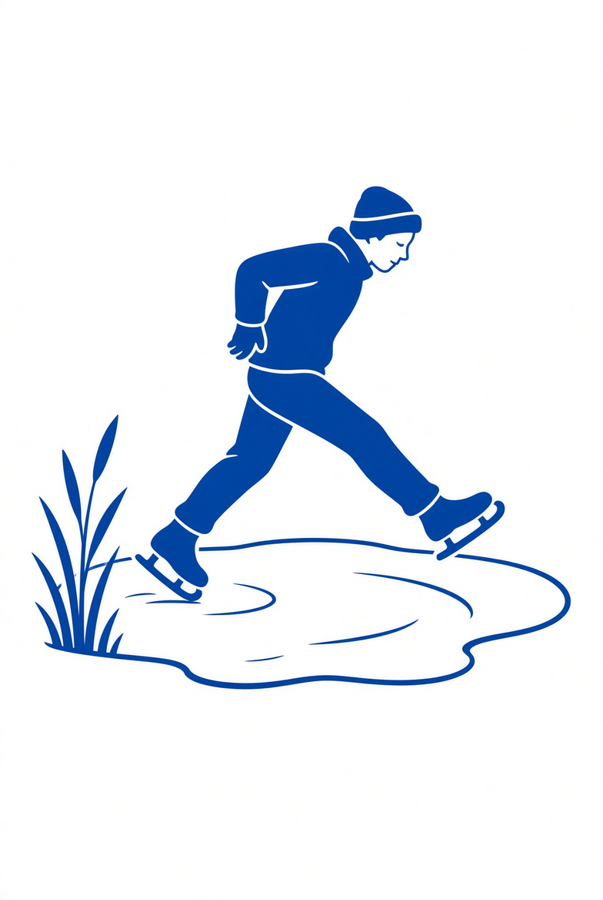
schaatsen
to skate
regelmatigrang 3690Sport & gamesgetekend
- Scene
- one adult glides over a frozen lake, bent forward with one hand on the back, one leg pushing out to the side and the blade of the other skate sliding forward; reeds stand at the edge of the ice.
- Must read
- a skater pushing one leg out sideways on ice.
- Avoid
- a skier with poles on snow (skiën); a person falling on ice (vallen); a child on a slide (glijden); an ordinary walk (lopen).
- Alt text
- Iemand buigt voorover op het ijs, één hand op de rug, en zet één been opzij af.
- Example
- Als het vriest, gaan wij schaatsen op het ijs.
When it freezes, we go skating on the ice.
schaatsen.png · rang 3690 · A2 regelmatig · lexicon woorden.tsv
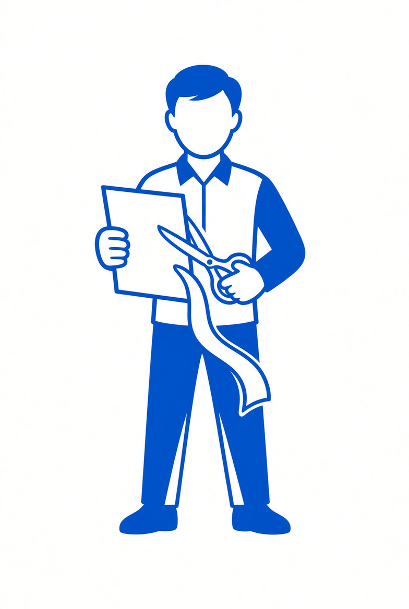
knippen
to cut (with scissors)
regelmatigrang 3769House & homegetekend
- Scene
- one adult holds a sheet of paper in one hand and cuts along it with a pair of scissors in the other; a long strip curls away from the blades and the cut has reached halfway across the sheet.
- Must read
- scissors cutting a strip from a sheet of paper.
- Avoid
- a knife through bread (snijden); a razor on a cheek (scheren); paper torn by two hands (scheuren); a saw through a plank (zagen).
- Contrast
- Pair with scheuren. Same sheet of paper in the same hands: the scissors cut a clean strip here, the hands pull the sheet apart there.
- Alt text
- Iemand houdt een vel papier vast en maakt er met een schaar een lange strook van los.
- Example
- Ik knip het papier met een schaar.
I cut the paper with scissors.
knippen.png · rang 3769 · A2 regelmatig · lexicon woorden.tsv
geen beeld
zwaaien (hand)
to wave (goodbye)
regelmatigrang 4135Movement & position
- Scene
- One adult stands on a station platform with one arm raised high and the open hand waving, fingers spread, face smiling, looking at a train that is pulling away to the right with a small face at its window. Platform only, no other people.
- Must read
- a raised open hand waving at a departing train.
- Avoid
- a person swinging a flag over the head (zwaaien); two people shaking hands (schudden); a hand held up flat to halt a car (stoppen); a person calling with a hand beside the mouth (roepen); a person running after the train (missen).
- Alt text
- Een volwassene staat op een perron met een hoog opgestoken open hand en kijkt naar een trein die wegrijdt.
- Example
- Ze zwaait naar haar opa bij het raam.
She waves at her grandpa at the window.
zwaaien-hand.png · rang 4135 · A2 regelmatig · lexicon woorden.tsv
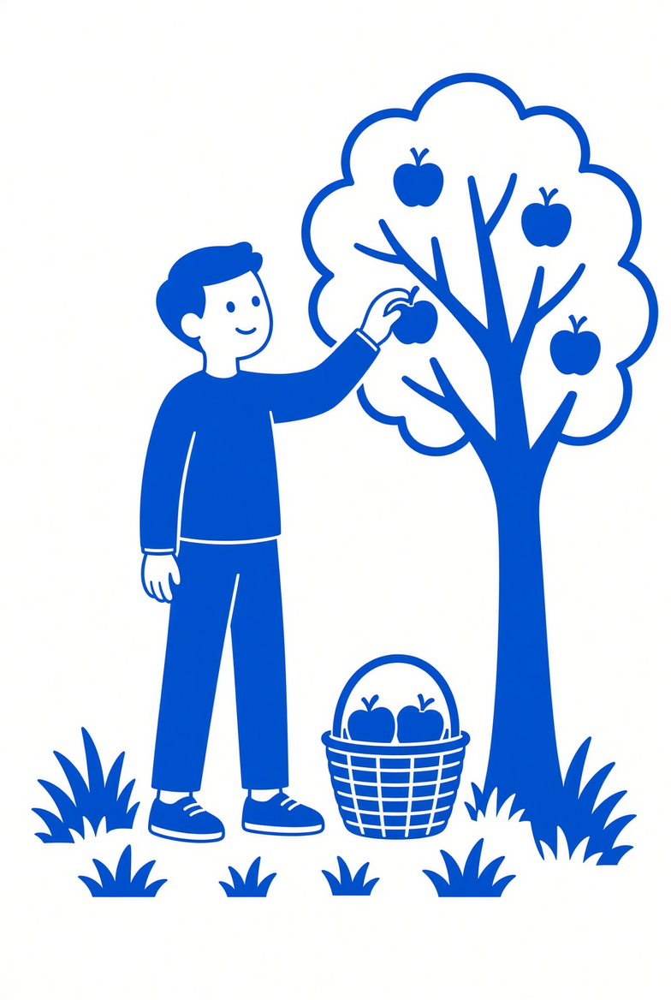
plukken
to pick (fruit)
regelmatigrang 4175Plants & farminggetekend
- Scene
- one adult stands on the grass under a small apple tree and reaches up with one hand to pull an apple off a low branch, the stalk just snapping; a basket with a few apples stands at the feet.
- Must read
- a hand pulling an apple off a branch.
- Avoid
- an apple caught as it falls (vangen); a young plant pressed into soil (planten); an apple bitten (eten); a fingertip stretched towards a jar on a shelf (reiken).
- Alt text
- Iemand staat onder een appelboom en trekt met één hand een appel van een lage tak.
- Example
- Wij plukken in september appels in de tuin.
We pick apples in the garden in September.
plukken.png · rang 4175 · A2 regelmatig · lexicon woorden.tsv
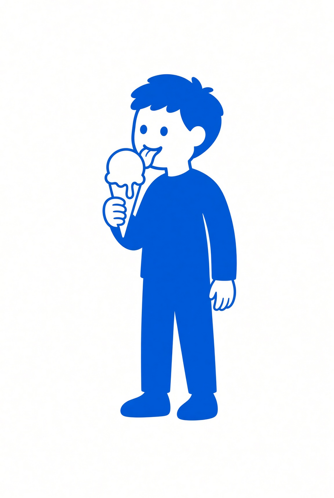
likken
to lick
regelmatigrang 4266Food & drinkgetekend
- Scene
- one child holds an ice-cream cone in one hand and runs the tongue up the side of the scoop, eyes on the ice cream; a drip runs down the cone towards the fingers.
- Must read
- a tongue on a scoop of ice cream.
- Avoid
- a bite taken from an apple (eten); a straw in a glass (drinken); a spoon tasted at a pot (proeven); a dog drinking from a bowl.
- Alt text
- Een kind houdt een hoorntje vast en haalt de tong langs het bolletje ijs.
- Example
- De hond likt mijn hand.
The dog licks my hand.
likken.png · rang 4266 · A2 regelmatig · lexicon woorden.tsv
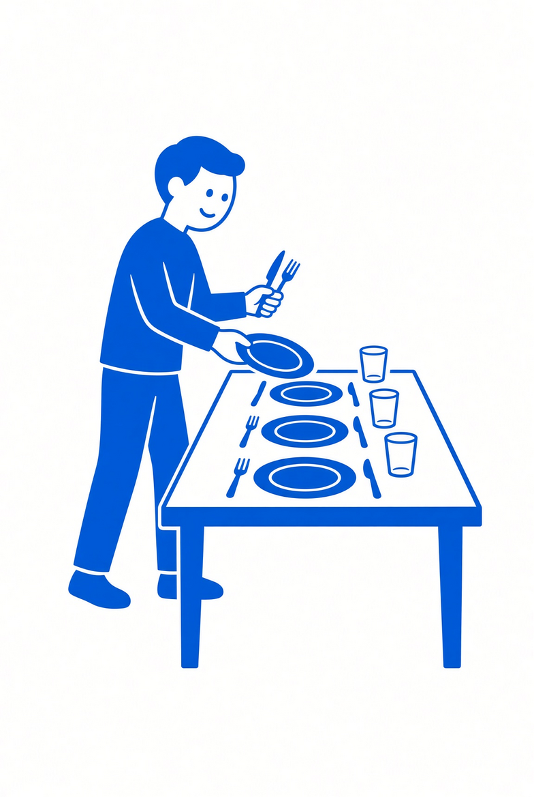
dekken
to set (the table)
regelmatigrang 4319House & homegetekend
- Scene
- one adult stands at a plain dining table and lays a dinner plate down at the last empty place, a knife and fork ready in the other hand; three places are already laid with a plate, a knife, a fork and a glass each. Nobody sits at the table. Only three places are laid; the fourth place at the table end is completely bare (no glass, no cutlery), and the plate is being lowered onto that bare spot.
- Must read
- a plate laid at the last empty place of a table laid for four.
- Avoid
- a plate lowered in front of a seated guest (serveren); a stack of dirty plates carried away (afruimen); a cloth thrown over a table (bedekken); a pot on a stove (koken).
- Alt text
- Iemand legt een bord neer op de laatste lege plek aan een tafel met borden, messen en vorken.
- Example
- Ik dek de tafel voor het avondeten.
I set the table for dinner.
dekken.png · rang 4319 · A2 regelmatig · lexicon woorden.tsv
geen beeld
vervelen
to be bored
regelmatigrang 4368Emotion & feeling
- Scene
- one adult sits slumped at a plain empty table with the cheek resting in one palm and the other hand drumming the fingers; the mouth is stretched wide in a yawn.
- Must read
- a slumped figure with the cheek in one palm and a wide yawn at an empty table.
- Avoid
- a person asleep with the head on the table (slapen); a person reading at a table (lezen); a person standing upright and yawning (gapen); a person waiting with a hand on the wrist (wachten).
- Alt text
- Iemand hangt aan een lege tafel met de wang in de hand en een wijd open geeuwende mond.
- Example
- Ik verveel me op zondag.
I get bored on Sundays.
vervelen.png · rang 4368 · A2 regelmatig · lexicon woorden.tsv
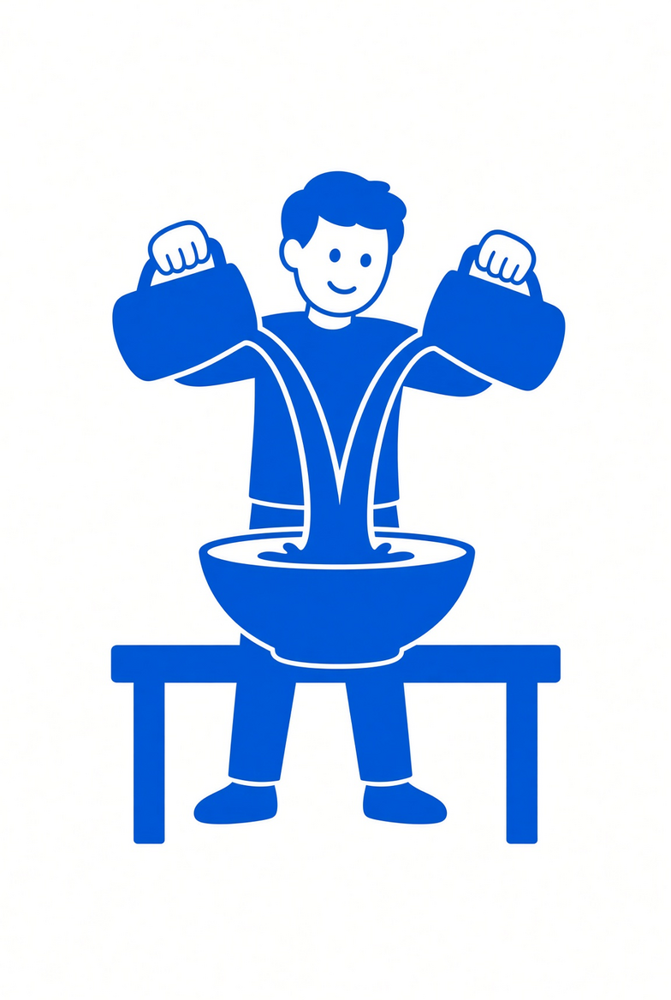
mengen
to mix
regelmatigrang 4612Food & drinkgetekend
- Scene
- one adult holds a jug in each hand and pours from both at once into one large bowl on a table, the two streams meeting in the middle and swirling together.
- Must read
- two streams poured into one bowl at the same time.
- Avoid
- a wooden spoon in a pan on a stove (koken); a watering can tipped over a plant (gieten); a tin of batter in an oven (bakken); water sprayed from a hose (spuiten); a spoon going round in a cup (roeren).
- Alt text
- Iemand houdt twee kannen schuin boven één grote kom; de twee stralen komen in het midden samen.
- Example
- Ik meng de verf met een beetje wit.
I mix the paint with a little white.
mengen.png · rang 4612 · A2 regelmatig · lexicon woorden.tsv
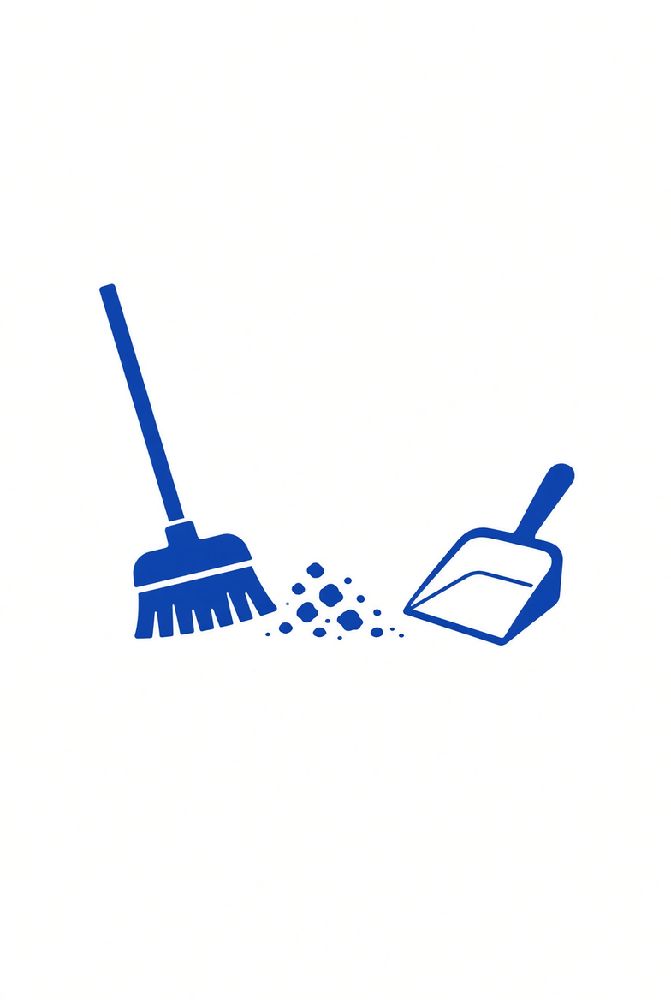
vegen
to sweep
regelmatigrang 4638House & homegetekend
- Scene
- no person: on the floor, left to right in one horizontal line, a broom head with a clear bristle brush and its handle rising upward, a small pile of crumbs, and a dustpan; the broom is pushing the crumbs towards the dustpan; nothing else.
- Must read
- a broom pushing crumbs towards a dustpan.
- Avoid
- a cloth wiping a table (schoonmaken); paper dropped in a bin (verwijderen); a mop in a bucket (dweilen); a vacuum cleaner.
- Alt text
- Iemand duwt met een lange bezem een hoopje kruimels naar een blik op de vloer.
- Example
- Na het eten veeg ik altijd de keukenvloer.
After dinner I always sweep the kitchen floor.
vegen.png · rang 4638 · A2 regelmatig · lexicon woorden.tsv
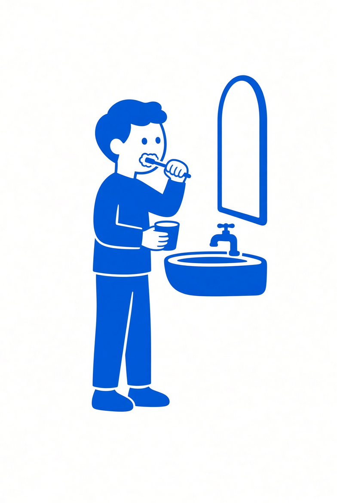
poetsen
to brush (teeth)
regelmatigrang 4693House & homegetekend
- Scene
- one child stands at a basin in front of a mirror and brushes the teeth with a toothbrush, foam at the lips, the other hand holding a cup; the tap is off.
- Must read
- a toothbrush in a foaming mouth.
- Avoid
- hands rubbed under a tap (wassen); a razor on a cheek (scheren); a comb through hair; a cup of water at the lips (drinken).
- Alt text
- Een kind staat voor de spiegel met een tandenborstel in de mond en schuim op de lippen.
- Example
- Ik poets mijn tanden twee keer per dag.
I brush my teeth twice a day.
poetsen.png · rang 4693 · A2 regelmatig · lexicon woorden.tsv
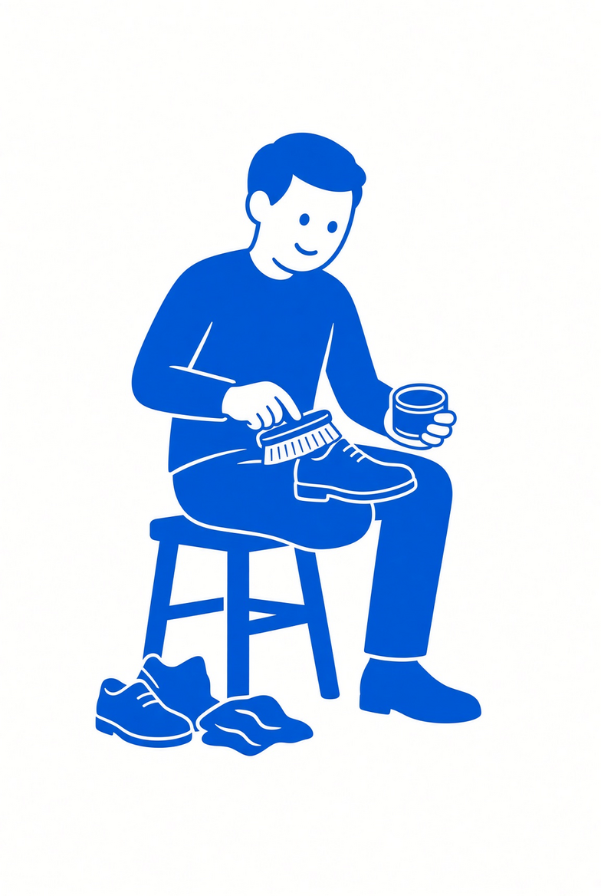
poetsen (schoenen)
to polish
regelmatigrang 4693Clothing & appearancegetekend
- Scene
- One adult sits on a low stool with one leather shoe held on the knee, working a stiff brush back and forth across the toe with the right hand; the left hand holds a tin of polish, and a cloth lies on the floor beside a second shoe. Nothing else in the picture.
- Must read
- a brush working across the toe of a shoe, a tin of polish in the other hand.
- Avoid
- a toothbrush in a foaming mouth (poetsen); a broom pushing dust across the floor (vegen); a cloth rubbed over a window (wassen); a brush over a horse in a stable (borstelen); a hand rubbing cream into an arm (smeren).
- Alt text
- Een volwassene zit op een kruk en haalt een borstel over de neus van een schoen.
- Example
- Hij poetst zijn schoenen voor het feest.
He polishes his shoes for the party.
poetsen-schoenen.png · rang 4693 · A2 regelmatig · lexicon woorden.tsv
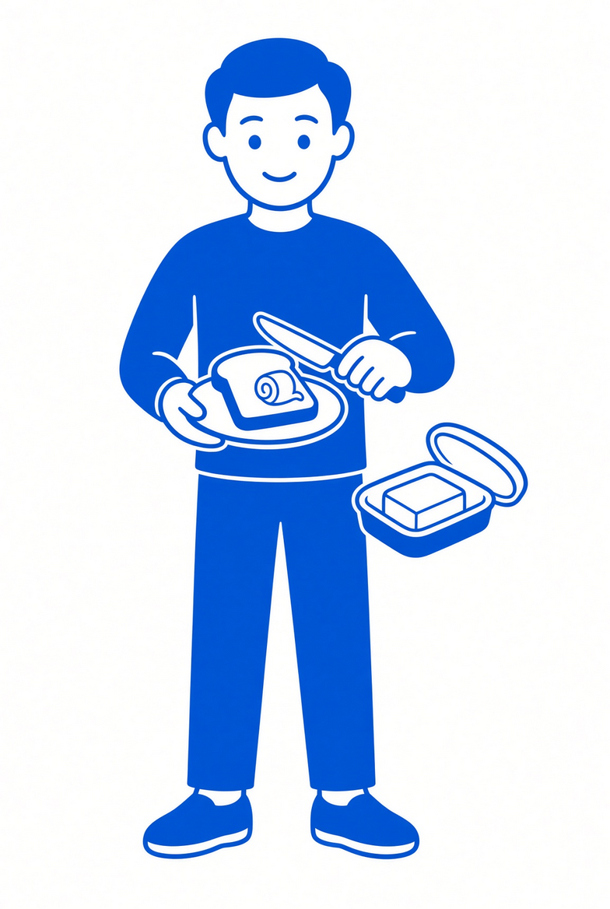
smeren
to spread (butter)
regelmatigrang 5227Food & drinkgetekend
- Scene
- one adult holds a slice of bread flat on a plate and spreads butter across it with a knife, a curl of butter on the blade; an open butter dish stands beside.
- Must read
- a knife spreading butter across a slice of bread.
- Avoid
- a knife cutting bread (snijden); a bite of bread (eten); a tin pushed into an oven (bakken); a stamp pressed on an envelope (plakken).
- Alt text
- Iemand strijkt met een mes boter over een boterham op een bordje.
- Example
- Ik smeer boter op mijn brood.
I spread butter on my bread.
smeren.png · rang 5227 · A2 regelmatig · lexicon woorden.tsv
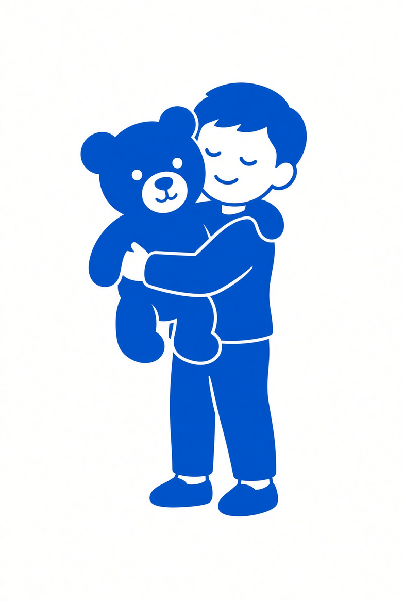
knuffelen
to cuddle
regelmatigrang 5272People & relationsgetekend
- Scene
- one small child stands hugging a large teddy bear tightly with both arms, a cheek pressed against its head and the eyes closed. The bear is almost as big as the child, its arms hanging over the child's shoulders; nothing else is in the picture.
- Must read
- a child hugging a teddy bear with both arms.
- Avoid
- a box pressed to the chest (hebben); a big box carried in both arms (dragen); lips on a cheek (zoenen); a hand moving along a cat's back (strelen).
- Alt text
- Een klein kind drukt een grote teddybeer met beide armen tegen zich aan, de ogen dicht.
- Example
- Het kind wil de hond knuffelen.
The child wants to cuddle the dog.
knuffelen.png · rang 5272 · A2 regelmatig · lexicon woorden.tsv
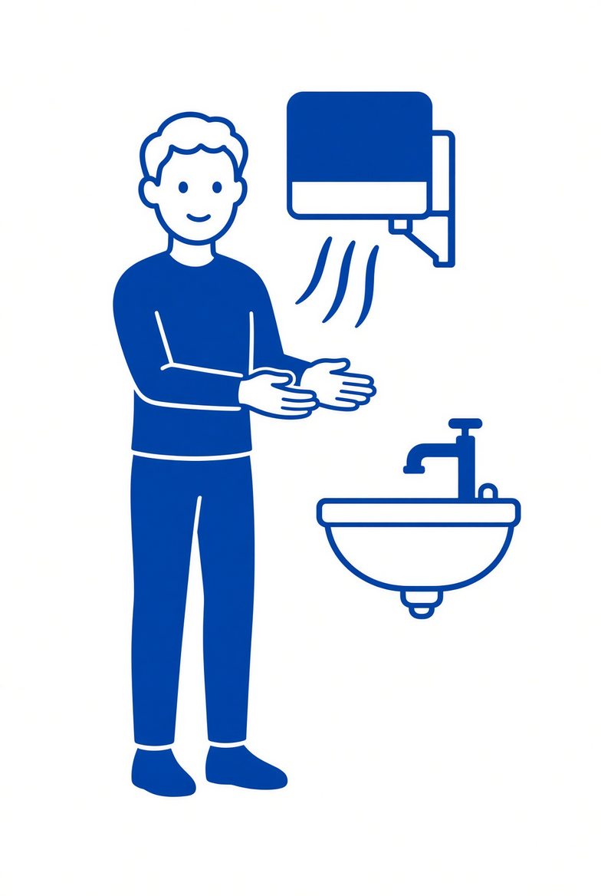
drogen
to dry
regelmatigrang 5389House & homegetekend
- Scene
- one adult stands in a washroom and holds both open hands still, palms down, under a box-shaped hand dryer fixed to the wall; short wavy lines of warm air blow down onto the hands, and a basin with a closed tap stands to one side. Nobody else in the picture.
- Must read
- two still hands held under a wall hand dryer with warm air blowing down.
- Avoid
- a tea towel rubbed round a plate (afdrogen); hands under a running tap (wassen); two palms rubbed together with nothing above them (wrijven); a wet cloth twisted over a bucket (wringen).
- Alt text
- Iemand houdt beide handen stil onder een kastje aan de muur waar warme lucht uit komt.
- Example
- Ik hang de was buiten om te drogen.
I hang the washing outside to dry.
drogen.png · rang 5389 · A2 regelmatig · lexicon woorden.tsv
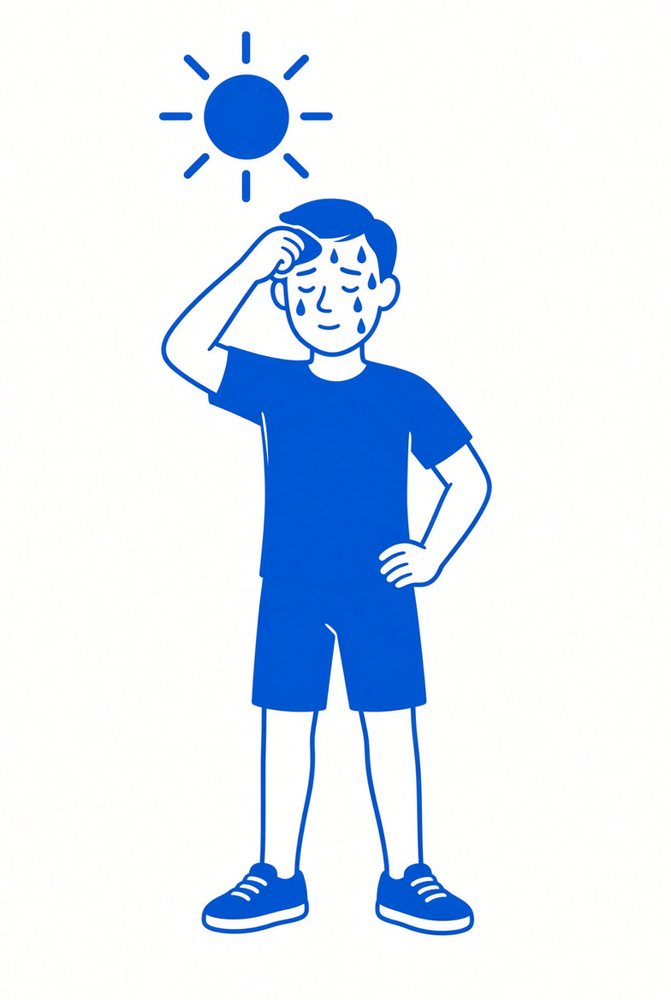
zweten
to sweat
regelmatigrang 5587Body & healthgetekend
- Scene
- one adult stands in the sun in a T-shirt, big drops running down the forehead and cheeks, wiping the brow with the back of one hand; the sun shines above.
- Must read
- big drops running down a face.
- Avoid
- tears running from the eyes (huilen); water falling from a shower head (douchen); a person bent over with hands on the knees (moe); a person fanning the face with a hat.
- Alt text
- Iemand in de zon haalt de rug van de hand langs het voorhoofd; grote druppels lopen over de wangen.
- Example
- Na het hardlopen zweet ik erg.
After running I sweat a lot.
zweten.png · rang 5587 · A2 regelmatig · lexicon woorden.tsv
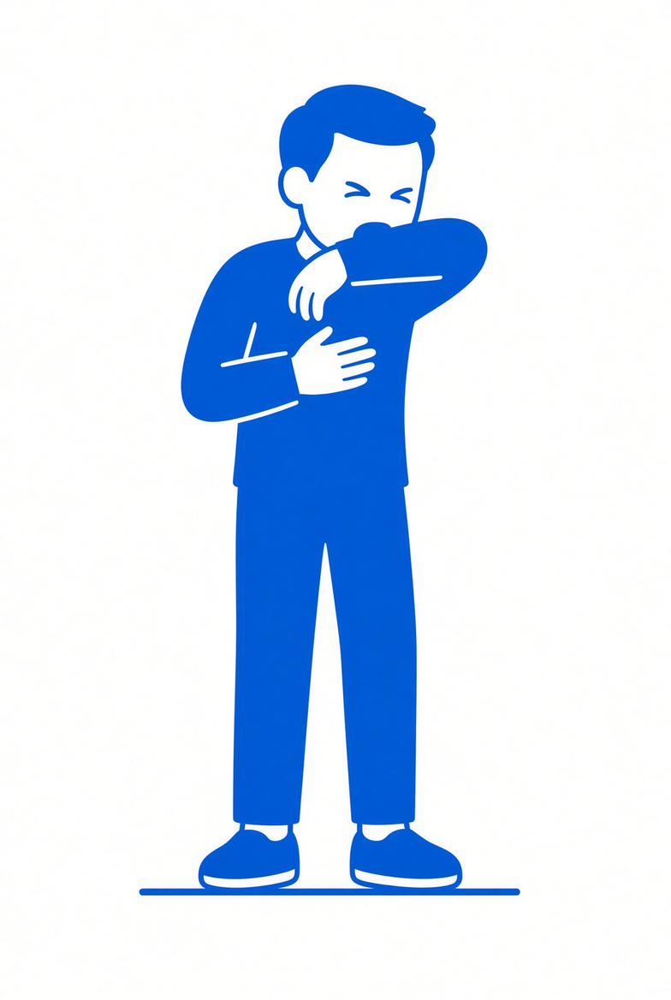
hoesten
to cough
regelmatigrang 5663Body & healthgetekend
- Scene
- one adult stands with the head turned and coughs into the crook of the elbow, eyes squeezed shut and the shoulders jerking forward. The free hand rests on the chest, and the person stands alone on a plain floor with nothing else around.
- Must read
- a cough into the crook of an elbow.
- Avoid
- a hand over a wide-open mouth (gapen); a hand holding the nose (stinken); cupped hands round an open mouth (roepen); a person sneezing into a tissue.
- Alt text
- Iemand houdt de mond in de elleboog, de ogen dicht en de schouders naar voren.
- Example
- Mijn zus hoest sinds gisteren de hele nacht.
My sister has been coughing all night since yesterday.
hoesten.png · rang 5663 · A2 regelmatig · lexicon woorden.tsv
geen beeld
amuseren
to amuse
regelmatigrang 8031Abstract & general
- Scene
- Three adults stand around a small table holding cups, all laughing with their heads thrown back and shoulders shaking. One has a hand on the table edge, another wipes an eye with a finger, and the third bends slightly forward. Nothing else is in the frame.
- Must read
- Three people laughing with heads thrown back round a table.
- Avoid
- one person laughing alone (lachen); two people dancing (dansen); people eating at a table (eten); two people talking (praten).
- Alt text
- Drie mensen staan rond een tafel met bekers en lachen met de hoofden achterover.
- Example
- Wij amuseren ons prima op het feest.
We are having a great time at the party.
amuseren.png · rang 8031 · A2 regelmatig · lexicon woorden.tsv
geen beeld
bukken
to stoop
regelmatigrang 8034Movement & position
- Scene
- One adult stands bent at the waist with the knees slightly bent and a hand reaching toward a dropped glove on the ground, the head lower than the hips. The other arm hangs loose, and the glove lies on a flat pavement. Nothing else is in the frame.
- Must read
- a bent torso with the head below the hips and a hand near the ground.
- Avoid
- a person picking up the item and standing (pakken); a person kneeling on the floor (knielen); a person falling over (vallen); a person jumping (springen).
- Alt text
- Iemand staat diep voorovergebogen met licht gebogen knieën en reikt naar een handschoen op de grond.
- Example
- Hij bukt zich om zijn pen te pakken.
He bends down to pick up his pen.
bukken.png · rang 8034 · A2 regelmatig · lexicon woorden.tsv